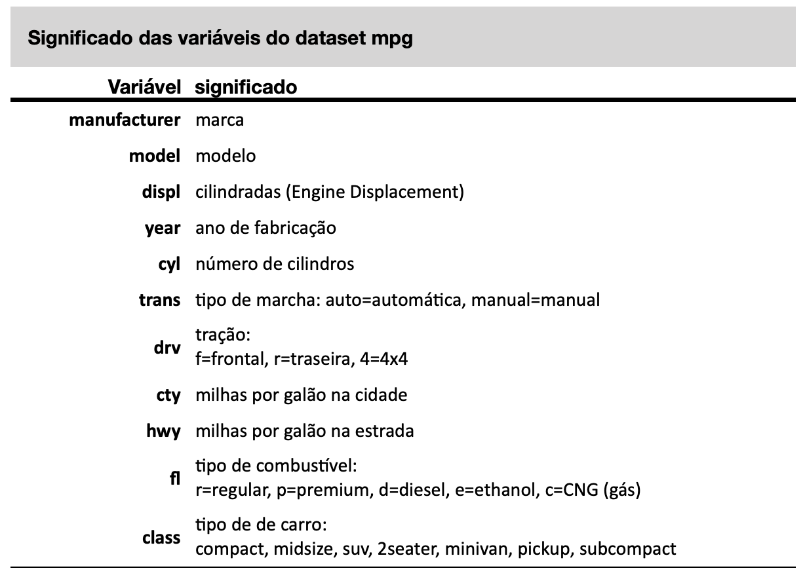

12 Manipulando dados
Neste capítulo, vamos aprender a manipular dados com os pacotes dplyr e tidyr. O dplyr é um pacote que fornece um conjunto de funções para manipulação de dados que são rápidas e fáceis de usar. O tidyr é um pacote que fornece um conjunto de funções para organizar dados em um formato mais limpo e organizado. Vamos aprender a usar esses pacotes para manipular dados de forma eficiente e eficaz. Em seguida vamos aprender a usar o pacote forcats para manipular dados categóricos de forma eficiente e eficaz. Finalmente vamos ver como analisar dados numéricos e fazer a sumarização de dados.
12.1 Organizando e transformando dados com tidyr
Na análise de dados na área da saúde, frequentemente lidamos com conjuntos de dados que precisam ser organizados de maneira eficiente para facilitar a análise e a visualização. O pacote tidyr do R é uma ferramenta poderosa para a manipulação e transformação de dados, permitindo que você organize seus dados de forma “arrumada” (tidy).
O tidyr faz parte do universo tidyverse, uma coleção de pacotes R projetados para ciência de dados. Ele fornece funções que facilitam a conversão de dados em formatos que são mais compatíveis com outros pacotes do tidyverse, como dplyr, ggplot2 e readr.
Neste capítulo, exploraremos as principais funções do tidyr, incluindo:
pivot_longer()epivot_wider(): funções para converter dados entre formatos largos e longos, sucessores modernos das funçõesgather()espread(), oferecendo maior flexibilidade e controle.separate()eunite(): funções para dividir e combinar colunas, respectivamente.drop_na(): função para remover linhas com valores ausentes.replace_na(): função para remover linhas com valores ausentes.
Vamos começar explorando como o tidyr pode simplificar a manipulação de dados e permitir que você se concentre nas análises que realmente importam para suas pesquisas e práticas na área da saúde.
12.1.1 Reformatação de Dados: Longo para Largo e Vice-Versa
Em análise de dados, os termos “dados longos” e “dados largos” referem-se a diferentes formas de estruturar conjuntos de dados. Dados largos, também conhecidos como formato “tidy”, são caracterizados por uma estrutura em que cada variável tem sua própria coluna e cada observação tem sua própria linha. Este formato é intuitivo para visualização direta e facilita a manipulação de dados em muitos casos, especialmente quando se trabalha com pacotes do tidyverse.
Por outro lado, dados longos possuem uma coluna para variáveis e outra para valores, permitindo múltiplas entradas para uma mesma entidade. Este formato é particularmente útil para análises temporais ou categóricas, onde múltiplas medições são realizadas para cada entidade. A habilidade de transformar dados entre esses formatos, utilizando funções como pivot_longer() e pivot_wider(), é crucial para uma análise eficiente e precisa, adaptando os dados à necessidade específica da tarefa analítica.
12.1.1.1 A função pivot_longer() e pivot_wider
Na seção sobre data frames mostramos que o layout mais comum de um data frame é chamado de wide, na qual as linhas representam observações e as colunas representam variáveis. Mas nem sempre os data frames vem organizados da forma como precisamos. Às vezes uma variável está distribuída em mais de uma coluna.
Num dataset que construimos em seções anteriores, por exemplo, existem duas colunas para representar os resultados de 2 diferentes tipos de tratamento, A e B. Essa separação pode ajudar a comparar visualmente os 2 tratamentos numa tabela.
Mas, pode ser interessante agrupar essas duas colunas num única variável, que poderíamos chamar de tratamento. Ou seja, podemos representar esse dados de duas formas, chamadas de wide ou long.
Esse agrupamento de duas ou mais colunas em uma única variável é feito com a função pivot_longer().
Vamos recriar esse dataset novamente aqui, com 3 pacientes e os 2 tipos de tratamento:
# criando os vetores do data frame simulado
pacientes <- c("João", "José", "Maria")
tratamentoA <- c(25,16,20)
tratamentoB <- c(12,8,9)
# criando o data frame a partir dos vetores já criados
result <- data.frame(pacientes, tratamentoA, tratamentoB)
# mostrando o data frame criado
result pacientes tratamentoA tratamentoB
1 João 25 12
2 José 16 8
3 Maria 20 9Veja que esse novo data frame possui 3 linhas e as colunas tratamentoA e tratamentoB com os resultados de cada tratamento.
O que precisamos é unir essas duas últimas colunas (tratamentoA e tratamentoB) em uma única coluna que iremos denominar simplesmente de tratamento.
Observe que o data frame no formato long terá 6 linhas, o dobro do anterior, e que os valores das duas antigas colunas(tratamentoA e tratamentoB) foram todos inseridos na coluna denominada tratamento. Observe que os resultados de cada tratamento foram colocados numa outra coluna que denominei de scores.
Ou seja, não há perda de informação, apenas uma modificação do layout do data frame, que é usualmente denominado de long, pelo fato de ser mais comprido que o anterior.
Essa transformação é realizada com a função pivo_longer(), como mostram os códigos abaixo.
# carregando o tidyr para usar a função pivot_longer
library(tidyr)
# transformando a tibble para o formato long
result.long <- pivot_longer(result,
cols=c("tratamentoA", "tratamentoB"),
names_to = "tratamento",
values_to = "scores")
result.long # A tibble: 6 × 3
pacientes tratamento scores
<chr> <chr> <dbl>
1 João tratamentoA 25
2 João tratamentoB 12
3 José tratamentoA 16
4 José tratamentoB 8
5 Maria tratamentoA 20
6 Maria tratamentoB 9Ou usando o operador pipe:
result.long <- result |>
pivot_longer(cols=c("tratamentoA", "tratamentoB"),
names_to = "tratamento",
values_to = "scores")
result.long # A tibble: 6 × 3
pacientes tratamento scores
<chr> <chr> <dbl>
1 João tratamentoA 25
2 João tratamentoB 12
3 José tratamentoA 16
4 José tratamentoB 8
5 Maria tratamentoA 20
6 Maria tratamentoB 9O que a função pivot_longer() fez foi:
- Carregou o data frame indicado (
result), - Selecionou as colunas indicadas no argumento
cols=c("tratamentoA" e "tratamentoB"). - Criou uma coluna chamada
tratamentoe colocou nessa coluna os nomestratamentoAetratamentoB. - Criou uma coluna chamada
scorese colocou nessa coluna os valores que antes estavam nas colunastratamentoAetratamentoB.
A função pivot_wider() faz justamente o oposto.
result.long |> pivot_wider(names_from = "tratamento",
values_from = "scores")# A tibble: 3 × 3
pacientes tratamentoA tratamentoB
<chr> <dbl> <dbl>
1 João 25 12
2 José 16 8
3 Maria 20 9Vejamos como a transformação do data frame na versão long facilita a criação de um gráfico. Com esse novo formato, podemos usare a função geom_boxplot do ggplot para criar boxplots de cada tipo de tratamento, o que seria bem mais difícil no data frame do tipo wide.
library(ggplot2)
ggplot(result.long) +
geom_boxplot(aes(x=tratamento, y=scores)) +
theme_classic()12.1.2 Separando e unindo colunas
Quando trabalhamos com conjuntos de dados na área da saúde, muitas vezes encontramos situações em que precisamos dividir uma coluna em várias ou combinar várias colunas em uma só. As funções separate() e unite() do pacote tidyr são projetadas exatamente para essas tarefas.
12.1.2.1 Função separate()
A função separate() é usada para dividir uma coluna em duas ou mais colunas. Esta função é especialmente útil quando uma coluna contém informações que podem ser separadas por um delimitador (como uma vírgula, espaço ou qualquer outro caractere).
Imagine que temos um conjunto de dados com uma coluna chamada data_hora que contém informações de data e hora combinadas numa única coluna como mostrado no código abaixo:
library(tidyr)
# Exemplo de dados
dados <- data.frame(id_paciente = c(1, 2, 3),
data_hora = c("2024-05-01 14:30", "2024-05-02 09:15", "2024-05-03 18:45"))
print(dados) id_paciente data_hora
1 1 2024-05-01 14:30
2 2 2024-05-02 09:15
3 3 2024-05-03 18:45Nesse caso, será útil colocar a data em uma coluna e a hora em outra coluna. A sintaxe da função separate é a seguinte:
separate(data, col, into, sep = " ")
- data: O conjunto de dados, o dataset
- col: A coluna a ser separada.
- into: Um vetor de novos nomes de colunas.
- sep: O delimitador que separa os valores (por padrão, é um espaço).
# Usando separate para dividir a coluna data_hora em data e hora
dados_separados <- separate(dados,
col = "data_hora",
into = c("data", "hora"),
sep = " ")
print(dados_separados) id_paciente data hora
1 1 2024-05-01 14:30
2 2 2024-05-02 09:15
3 3 2024-05-03 18:45Podemos também separar a data em dia mes e ano, como mostrado no código abaixo
# Usando separate para dividir a coluna data_hora em data e hora
dados_dma <- separate(dados_separados,
col = "data",
into = c("ano", "mes", "dia"),
sep = "-")
print(dados_dma) id_paciente ano mes dia hora
1 1 2024 05 01 14:30
2 2 2024 05 02 09:15
3 3 2024 05 03 18:45# Usando separate para dividir a coluna hora em horas e minutos
dados_hm <- separate(dados_dma,
col = "hora",
into = c("horas", "minutos"),
sep = ":")
print(dados_hm) id_paciente ano mes dia horas minutos
1 1 2024 05 01 14 30
2 2 2024 05 02 09 15
3 3 2024 05 03 18 4512.1.2.2 Função unite()
A função unite() é usada para combinar duas ou mais colunas em uma única coluna. Essa função é útil quando queremos simplificar nosso conjunto de dados ou criar uma nova coluna combinada. A sintaxe dessa função é:
unite(data, col, ..., sep = "_")
-data: O conjunto de dados. -col: O nome da nova coluna. -…: As colunas a serem unidas. -sep: O delimitador a ser usado para unir os valores (por padrão, é um sublinhado “_”).
Veja como unir as colunas que acabamos de separar:
# Usando unite para combinar as colunas data e hora em data_hora
dados <- unite(dados_hm, col = "data_hora", horas, minutos, sep = ":")
print(dados) id_paciente ano mes dia data_hora
1 1 2024 05 01 14:30
2 2 2024 05 02 09:15
3 3 2024 05 03 18:45A função unite() não suporte múltiplas uniões em um único comando. Assim, para unir novamente também as colunas ano, mes e dia, precisamos de uma nova linha com unite.
# Usando unite para combinar as colunas data e hora em data_hora
print(dados_hm) id_paciente ano mes dia horas minutos
1 1 2024 05 01 14 30
2 2 2024 05 02 09 15
3 3 2024 05 03 18 45dados_hm <- unite(dados_hm, col = "data_hora", horas, minutos, sep = ":")
dados_hm <- unite(dados_hm, col = "data", ano, mes, dia, sep = "-")
print(dados_hm) id_paciente data data_hora
1 1 2024-05-01 14:30
2 2 2024-05-02 09:15
3 3 2024-05-03 18:4512.1.3 NA Values
É muito frequente que faltem dados em pesquisas. Às vezes uma questão de um questionário deixou de ser respondida, às vezes um dado não foi encontrado etc. Esses dados são representados no R como NA, que significa NOT AVAILABLE. É importante reconhecer a existência desses dados faltantes pois a presença desses dados faltantes pode impedir que sejam executados cálculos matemáticos. Afinal de contas, o que poderia significar 3*NA? Experimente fazer essa conta no R.
12.1.3.1 Desconsiderar valores NA
Como vimos anteriormente, nem todos argumentos são valores numéricos. Alguns argumentos servem para indicar como a função deve se comportar. Um argumento importante de muitas funções é o na.rm = TRUE. a expressão na.rm=TRUE é uma abreviação de REMOVE NOT AVAILABLE DATA, ou seja, remova os dados faltantes. Ao indicarmos que esse argumento é verdadeiro (TRUE), o R irá desconsiderar dados em branco ou faltantes ao fazer os cálculos. Sem esse argumento, frequentemente os cálculos não são realizados.
Criando uma variável peso com valores NA
peso <- c(50,55,8, NA)
peso[1] 50 55 8 NATentando calcular a média do peso, sem retirar os valores NA
mean(peso)[1] NAVeja que o resultado obtido foi NA, ou seja, o R não conseguiu fazer os cálculos. Uma das formas de resolver esse problema é retirar os valores NA antes de fazer os cálculos. Isso pode ser feito através do argumento na.rm = TRUE.
Tentando calcular a média do peso, indicando ao R para retirar os valores NA com o o argumento na.rm = TRUE
# calcula a média do peso, retirando os valores NA, utilizando o argumento na.rm = TRUE
mean(peso, na.rm = TRUE)[1] 37.66667Veremos a seguir como resolver problemas de valores NA em data frames usando o pacote dplyr, com as funções drop_na() e replace_na().
12.1.3.2 A função drop_na()
Em muitos conjuntos de dados, especialmente na área da saúde, é comum encontrar valores ausentes (NA). Esses valores podem surgir por diversos motivos, como erros de coleta de dados ou dados que não foram registrados. A função drop_na() do pacote tidyr é uma ferramenta eficaz para lidar com esses valores ausentes, permitindo a remoção de linhas que contêm NAs de forma fácil e eficiente.
A função drop_na() serve para excluirmos linhas com valores NA antes de executarmos algum cálculo estatístico. Lembre-se que muitas funções estatísticas não conseguem ser executadas se houver valores NA nos dados.
Vamos criar uma tabela com valores NA e então tentar calcular a média de alguma das variáveis sem retirar os valores NA e, em seguida, retirando os valores NA.
mydata <- tibble(
id = 1:10,
sex = c("Male", "Male","Male","Male","Male", "Female", "Female", "Female", "Female", "Female"),
age = c(44, 18, 29, 33, 57, 47, 33, 71, 34, NA),
height = c(NA, 172, 175, NA, 170, 169, 145, 179, 155, 149),
weight = c(70, 120, 90, NA, 89, 72, 89, 91, 74, 70)
)
mydata# A tibble: 10 × 5
id sex age height weight
<int> <chr> <dbl> <dbl> <dbl>
1 1 Male 44 NA 70
2 2 Male 18 172 120
3 3 Male 29 175 90
4 4 Male 33 NA NA
5 5 Male 57 170 89
6 6 Female 47 169 72
7 7 Female 33 145 89
8 8 Female 71 179 91
9 9 Female 34 155 74
10 10 Female NA 149 701ª Tentativa: tentando calcular a média das idades sem retirar os valores NA.
library(dplyr) # necessário para usar a função pull
mydata |>
select(age) |>
pull() |>
mean()[1] NA2ª Tentativa: tentando calcular a média das idades usando o argumento na.rm=TRUE.
mydata |>
select(age) |>
pull() |>
mean(na.rm = TRUE)[1] 40.66667Conseguimos calcular usando a função mean() com o argumento na.rm=TRUE. Entretanto, nem todas funções aceitam o argumento na.rm=TRUE. E as vezes precisamos retirar os valores NA numa sequencia diferente dentro do pipe. Podemos entáo resolver isso usando a função drop_na().
Vejamos o resultado usando a função drop_na(). Perceba que a função drop_na() precisa ser usada antes da função pull(). Isso é porque a função drop_na() atua em um data frame e a função pull() recebe um data frame e tem como output um vetor. Então, na sequencia do código, depois do pull() o que existe é um vetor e não um data frame. Por isso a função drop_na() não pode ser usada depois do pull().
mydata |>
select(age) |>
drop_na() |>
pull() |>
mean()[1] 40.66667Vejamos alguns outros exemplos mais simples de como usar a função drop_na().
library(tidyr)
library(tibble)
# Exemplo de dados de pacientes com NAs
pacientes <- tibble(id_paciente = 1:10,
nome = c("Ana", "Bruno", NA, "Diana", "Eduardo",
"Fernanda", "Gustavo", NA, "Isabela", "João"),
idade = c(25, 30, 35, 40, NA, 28, 33, 45, NA, 50),
cidade = c("São Paulo", "Rio de Janeiro", "Belo Horizonte", NA,
"Curitiba", "Porto Alegre", "Salvador", "Brasília", "Fortaleza", NA))
print(pacientes)# A tibble: 10 × 4
id_paciente nome idade cidade
<int> <chr> <dbl> <chr>
1 1 Ana 25 São Paulo
2 2 Bruno 30 Rio de Janeiro
3 3 <NA> 35 Belo Horizonte
4 4 Diana 40 <NA>
5 5 Eduardo NA Curitiba
6 6 Fernanda 28 Porto Alegre
7 7 Gustavo 33 Salvador
8 8 <NA> 45 Brasília
9 9 Isabela NA Fortaleza
10 10 João 50 <NA> Podemos usar a função drop_na() para retirar todas as linhas que tenham dados faltantes em toda a tibble
# Remover linhas com NAs nas colunas 'nome' e 'idade'
pacientes2 <- drop_na(pacientes)
print(pacientes2)# A tibble: 4 × 4
id_paciente nome idade cidade
<int> <chr> <dbl> <chr>
1 1 Ana 25 São Paulo
2 2 Bruno 30 Rio de Janeiro
3 6 Fernanda 28 Porto Alegre
4 7 Gustavo 33 Salvador Às vezes, pode ser necessário remover linhas com NAs apenas em colunas específicas, enquanto preserva outras linhas com NAs em colunas menos críticas. Vamos considerar o mesmo conjunto de dados, mas desta vez removeremos apenas as linhas com NAs nas colunas nome e idade.
# Remover linhas com NAs na coluna 'idade'
pacientes3 <- drop_na(pacientes, idade)
print(pacientes3)# A tibble: 8 × 4
id_paciente nome idade cidade
<int> <chr> <dbl> <chr>
1 1 Ana 25 São Paulo
2 2 Bruno 30 Rio de Janeiro
3 3 <NA> 35 Belo Horizonte
4 4 Diana 40 <NA>
5 6 Fernanda 28 Porto Alegre
6 7 Gustavo 33 Salvador
7 8 <NA> 45 Brasília
8 10 João 50 <NA> 12.1.3.3 A função replace_na()
Nem sempre deletar da análise os valores NA é a melhor solução. Ao deletar um dado NA da amostra, podemos estar aumentando artificialmente o desvio padrão. Algumas vezes pode ser interessante substituir os valores NA por outro valor. Por exemplo, no caso de dados numéricos, é uma técnica comum substituir os valores NA pela média. Isso não modifica a média do conjunto, e evita que o desvio padrão seja artificialmente aumentado.
Para substituir um valor numérico faltante pela média dos dados utilizando a função replace_na() do pacote tidyr, você pode seguir os passos abaixo. Primeiro, calcule a média dos valores existentes na coluna, ignorando os valores ausentes (NA). Em seguida, utilize replace_na() para substituir os valores ausentes pela média calculada.
Aqui está um exemplo detalhado, usando também a função mutate do pacote dplyr que será discutido no capítulo seguinte.
Vamos usar um conjunto de dados de pacientes e substituir os valores ausentes na coluna idade pela média das idades não ausentes.
library(tidyr)
library(tibble)
library(dplyr)
# Exemplo de dados de pacientes com NAs usando tibble
pacientes <- tibble(id_paciente = 1:10,
nome = c("Ana", "Bruno", NA, "Diana", "Eduardo",
"Fernanda", "Gustavo", NA, "Isabela", "João"),
idade = c(25, 30, 35, 40, NA, 28, 33, 45, NA, 50),
cidade = c("São Paulo", "Rio de Janeiro", "Belo Horizonte", NA, "Curitiba",
"Porto Alegre", "Salvador", "Brasília", "Fortaleza", NA))
print(pacientes)# A tibble: 10 × 4
id_paciente nome idade cidade
<int> <chr> <dbl> <chr>
1 1 Ana 25 São Paulo
2 2 Bruno 30 Rio de Janeiro
3 3 <NA> 35 Belo Horizonte
4 4 Diana 40 <NA>
5 5 Eduardo NA Curitiba
6 6 Fernanda 28 Porto Alegre
7 7 Gustavo 33 Salvador
8 8 <NA> 45 Brasília
9 9 Isabela NA Fortaleza
10 10 João 50 <NA> mean(pacientes$idade, na.rm = TRUE)[1] 35.75sd(pacientes$idade, na.rm = TRUE)[1] 8.647873# Calcular a média da coluna idade, ignorando NAs
media_idade <- mean(pacientes$idade, na.rm = TRUE)
# Substituir os valores ausentes na coluna idade com a média
pacientes <- pacientes |>
mutate(idade = replace_na(idade, media_idade))
print(pacientes)# A tibble: 10 × 4
id_paciente nome idade cidade
<int> <chr> <dbl> <chr>
1 1 Ana 25 São Paulo
2 2 Bruno 30 Rio de Janeiro
3 3 <NA> 35 Belo Horizonte
4 4 Diana 40 <NA>
5 5 Eduardo 35.8 Curitiba
6 6 Fernanda 28 Porto Alegre
7 7 Gustavo 33 Salvador
8 8 <NA> 45 Brasília
9 9 Isabela 35.8 Fortaleza
10 10 João 50 <NA> Observe que os valores agora são mostrados com 2 casas decimais. Isso ocorre porque ao calcular a média da idade o R transformou esses dados que antes eram numeros inteiros (int) em números reais (dbl).
# recalculando a média das idades, agora não precisamos mais de informar na.rm = TRUE
mean(pacientes$idade)[1] 35.75sd(pacientes$idade)[1] 7.626707Veja que a média não foi alterada após a substituição dos valores faltantes pela própria média. O desvio padrão, por outro lado fica um pouco menor.
Podemos usar replace_na() também para substituir o texto de variáveis. Por exemplo, podemos colocar o texto “Não informado” ou “Desconhecido” em campos onde havia NAs.
library(tidyr)
library(tibble)
# Exemplo de dados de pacientes com NAs usando tibble
pacientes <- tibble(id_paciente = 1:10,
nome = c("Ana", "Bruno", NA, "Diana", "Eduardo",
"Fernanda", "Gustavo", NA, "Isabela", "João"),
idade = c(25, 30, 35, 40, NA, 28, 33, 45, NA, 50),
cidade = c("São Paulo", "Rio de Janeiro", "Belo Horizonte", NA, "Curitiba",
"Porto Alegre", "Salvador", "Brasília", "Fortaleza", NA))
# Substituir valores ausentes por valores específicos
pacientes_substituidos <- replace_na(pacientes,
list(nome = "Desconhecido",
cidade = "Não Informado"))
print(pacientes_substituidos)# A tibble: 10 × 4
id_paciente nome idade cidade
<int> <chr> <dbl> <chr>
1 1 Ana 25 São Paulo
2 2 Bruno 30 Rio de Janeiro
3 3 Desconhecido 35 Belo Horizonte
4 4 Diana 40 Não Informado
5 5 Eduardo NA Curitiba
6 6 Fernanda 28 Porto Alegre
7 7 Gustavo 33 Salvador
8 8 Desconhecido 45 Brasília
9 9 Isabela NA Fortaleza
10 10 João 50 Não Informado 12.2 Manipulando dados com dplyr
A análise de dados envolve frequentemente a transformação e manipulação de grandes conjuntos de dados para torná-los prontos para a análise. No contexto médico, isso pode incluir a limpeza de dados de pacientes, o cálculo de estatísticas resumidas, a filtragem de observações relevantes e a combinação de diferentes fontes de dados.
O pacote dplyr, parte integrante do tidyverse, é uma ferramenta poderosa para essas tarefas, proporcionando uma sintaxe clara e eficiente para a manipulação de dados em R.
O dplyr oferece um conjunto de funções intuitivas e expressivas para a manipulação de dados tabulares. Estas funções permitem realizar operações como seleção de colunas, filtragem de linhas, agrupamento de dados, criação de novas variáveis e combinações de datasets. O foco do dplyr é a simplicidade e a legibilidade do código, o que facilita a escrita de scripts claros e concisos, mesmo para iniciantes.
12.2.1 Funções Mais Importantes do dplyr
O dplyr é um dos pacotes mais populares do tidyverse para manipulação de dados. Aqui estão algumas das funções mais importantes e frequentemente utilizadas no dplyr:
filter(): Filtra linhas em um conjunto de dados com base em condições específicas.select(): Seleciona colunas específicas de um conjunto de dados.pull(): Extrai uma coluna de um conjunto de dados como um vetor.mutate(): Adiciona novas colunas ou modifica colunas existentes em um conjunto de dados.arrange(): Ordena as linhas de um conjunto de dados com base em uma ou mais colunas.group_by(): Agrupa os dados com base em uma ou mais colunas, preparando-os para operações de agregação.ungroup(): Remove agrupamentos de um conjunto de dados.rename(): Renomeia colunas em um conjunto de dados.recode(): Recodifica valores, substituindo valores existentes por novos valores.bind_rows(): Empilha dois ou mais conjuntos de dados um em cima do outro (concatenação vertical).bind_cols(): Combina dois ou mais conjuntos de dados lado a lado (concatenação horizontal).distinct(): Retorna linhas distintas, removendo duplicatas de um conjunto de dados.count(): Conta o número de observações em cada grupo.summarize()/summarise(): Resume os dados em uma única linha ou várias linhas, aplicando funções de agregação.
Essas funções são fundamentais para a manipulação e transformação de dados em R, permitindo que você limpe, organize e analise seus dados de maneira eficiente.
12.2.2 Filtrando linhas com filter()
Num data frame as linhas representam as diferentes observações e as colunas representam as variáveis. Por exemplo, em pesquisas na área de saúde, geralmente cada linha representa um participante da pesquisa e as colunas as vriáveis da pesquisa.
Frequentemente precisamos acessar subgrupos de um grande conjunto de dados, ou seja, precisamos selecionar subgrupos nos quais desejamos fazer nossa análise. Isso é feito no R com a função filter() do pacote dplyr que faz parte do tidyverse.
O modo de usar a função filter() é muito simples: o primeiro argumento é o data frame a ser usado, em seguida as expressões lógicas para filtrar/selecionar as linhas do data frame, como mostraremos a seguir, usando novamente o dataset mpg do pacote ggplot2 (Esse pacote também faz parte do tidyverse).
Vamos carregar esses dados com a função data():
library(ggplot2) # necessária para poder ter acesso ao dataset mpg
data(mpg)Relembrando o significado de cada variável do dataset mpg:

Sabemos que para acessar uma variável de um data frame usamos o operador $ e que a variável com os nomes das montadores é manufacturer. Vamos então checar quais são as montadoras dos carros dessa pacote com o comando unique(). Essa função lista os elementos de um conjunto, sem repetição:
unique(mpg$manufacturer) [1] "audi" "chevrolet" "dodge" "ford" "honda"
[6] "hyundai" "jeep" "land rover" "lincoln" "mercury"
[11] "nissan" "pontiac" "subaru" "toyota" "volkswagen"Como podemos ver, esse banco de dados tem carros de várias montadoras. Em análises estatísticas que é frequentemente necessário separar os dados de acordo com alguma regra, por exemplo, de acordo com a montadora. Podemos, por exemplo desejar analisar apenas os carros das montadoras tradicionais no Brasil (Ford, Chevrolet, Volkswagen). Vamos fazer um novo data frame com essas montadoras. Para isso usamos a função filter() como descrito anteriormente e criar um novo data frame chamado cfv, letras iniciais dessas montadoras.
cfv <- filter(mpg, manufacturer %in% c("chevrolet", "ford", "volkswagen"))Observe que usamos um novo operador nessa função %in%. Esse operador procurou dentro da variável manufacturer os nomes “chevrolet”, “ford”, “volkswagen”. A função filter() por sua vez, selecionou essas montadoras e o resultado foi colocado num novo data frame chamado de cfv.
Veja que agora nosso data frame só possui essas três montadoras.
unique(cfv$manufacturer)[1] "chevrolet" "ford" "volkswagen"Podemos visualizar o consumo dessas três marcar selecionadas num boxplot comparativo, como feito a seguir:
boxplot(cty~manufacturer, # plota o consumo de acordo com a montadora
data=cfv, # indica que os dados estão no data frame cfv
col="lightblue") # colore os box com a cor lightbluePodemos ver com essa análise inicial que os carros da volkswagen percorrem mais milhas com um galão que os carros da Chevrolet e da Ford. Mas quais são esses carros?
Podemos usar o comando filter() para filtramos os dados de acordo com regras numéricas. Por exemplo, para sabermos quais são os carros que conseguem percorrer mais de 30 milhas com um galão usamos também a função filter() como abaixo, no qual criamos um novo data frame com o nome bestcars.
bestcars <- filter(cfv, cty > 30)Para mostrar o conteúdo desse novo data frame que chamamos de bestaras basta digitar o nome do data frame no console. E para saber apenas o nome dos modelos desses carros, basta usar o operador $, como mostrado abaixo:
bestcars$model[1] "jetta" "new beetle"Se desejássemos separar apenas UMA determinada montadora, poderíamos da mesma forma usar a função filter. Lembrando que o operador de igualdade no R é um igual duplo ==. Por exemplo, podemos criar um dataframe apenas com os carros da Jeep.
jeep <- filter(mpg, manufacturer == "jeep")
jeep# A tibble: 8 × 11
manufacturer model displ year cyl trans drv cty hwy fl class
<chr> <chr> <dbl> <int> <int> <chr> <chr> <int> <int> <chr> <chr>
1 jeep grand cher… 3 2008 6 auto… 4 17 22 d suv
2 jeep grand cher… 3.7 2008 6 auto… 4 15 19 r suv
3 jeep grand cher… 4 1999 6 auto… 4 15 20 r suv
4 jeep grand cher… 4.7 1999 8 auto… 4 14 17 r suv
5 jeep grand cher… 4.7 2008 8 auto… 4 9 12 e suv
6 jeep grand cher… 4.7 2008 8 auto… 4 14 19 r suv
7 jeep grand cher… 5.7 2008 8 auto… 4 13 18 r suv
8 jeep grand cher… 6.1 2008 8 auto… 4 11 14 p suv 12.2.3 Selecionando colunas com select()
A função select() seleciona as colunas desejadas, ou seja, as variáveis desejadas. Muitas vezes um data frame possui muitas colunas e pode ser útil criar um novo data frame apenas com as variáveis de interesse. A função select() faz justamente isso. O dataset mpg possui 11 variáveis. Se nossa análise vai usar apenas manufacturer, displ e cty, podemos criar um novo data frame com apenas essas variáveis.
library(dplyr)
library(ggplot2) # necessária para poder ter acesso ao dataset mpg
newdf <- select(mpg, manufacturer, displ, cty)Para verificar esse novo data frame basta usar a função str() e veremos que agora só existem 3 variáveis.
str(newdf)tibble [234 × 3] (S3: tbl_df/tbl/data.frame)
$ manufacturer: chr [1:234] "audi" "audi" "audi" "audi" ...
$ displ : num [1:234] 1.8 1.8 2 2 2.8 2.8 3.1 1.8 1.8 2 ...
$ cty : int [1:234] 18 21 20 21 16 18 18 18 16 20 ...Quando trabalhamos com datasets com centenas ou milhares de variáveis, usar a função select() é bastante útil.
12.2.4 Extraindo valores com pull()
A função pull() funciona de forma parecida com o operador $. Ambos tem a função de extrair valores de um data frame. Já vimos como usar o operador $ para extrair valores de uma variável e usar esses valores em funções estatísticas tais como mean(), median() e sd(). Vamos relembrar como isso foi feito usando o dataset mpg.
# calculando a média das milhas por galão na cidade
library(dplyr)
library(ggplot2) # necessária para poder ter acesso ao dataset mpg
mean(mpg$cty) [1] 16.85897Mas as vezes são necessárias diversas operações antes de encontrar o conjunto numérico desejado para calcular uma média. Por exemplo, se quisermos calcular a média das milhas percorridas com um galão em automóveis do tipo SUV? vamos ver como podemos fazer isso usando o operador pipe |> e as funções select(), filter() e pull().
data(mpg)
mpg |> filter(class=="suv") |>
select(cty) |>
mean()Warning in mean.default(select(filter(mpg, class == "suv"), cty)): argument is
not numeric or logical: returning NA[1] NAO código acima falhou!. O motivo é que o argumento passado pelo pipe para a função mean() não é um vetor, mas sim uma data frame (ou uma tibble). Podemos conferir isso no código abaixo, onde substituimos a função mean() pela função class() que informa o tipo de objeto.
mpg |> filter(class=="suv") |>
select(cty) |>
class()[1] "tbl_df" "tbl" "data.frame"Para que a função mean() possa calcular a média é necessário que o argumento passado para essa função seja um conjunto numérico, ou seja, um vetor numérico. É aí que entra a função pull(), que extrai os valores do data frame e repassa esse valores adiante pelo pipe. Vejamos agora como consertar o código.
mpg |> filter(class=="suv") |>
select(cty) |>
pull() |>
mean()[1] 13.512.2.5 Criando novas variáveis com mutate()
É frequente a necessidade de modificar ou criar novas variáveis no processo de análise de dados. Uma situação comum é a necessidade de transformarmos a unidade de medida de libras para peso, de milhas para quilômetros, de horas para minutos etc.
No dataset mpg a medida da distância percorrida é dada em milhas. Podemos usar a função mutate() do pacote dplyr que faz parte do tidyverse para criar uma nova variável com a medida em quilômetros. Veja no código abaixo como fazer isso.
library(dplyr)
library(ggplot2) # necessária para poder ter acesso ao dataset mpg
mutate(cty.km = cty*1.609344, mpg) # A tibble: 234 × 12
manufacturer model displ year cyl trans drv cty hwy fl class
<chr> <chr> <dbl> <int> <int> <chr> <chr> <int> <int> <chr> <chr>
1 audi a4 1.8 1999 4 auto… f 18 29 p comp…
2 audi a4 1.8 1999 4 manu… f 21 29 p comp…
3 audi a4 2 2008 4 manu… f 20 31 p comp…
4 audi a4 2 2008 4 auto… f 21 30 p comp…
5 audi a4 2.8 1999 6 auto… f 16 26 p comp…
6 audi a4 2.8 1999 6 manu… f 18 26 p comp…
7 audi a4 3.1 2008 6 auto… f 18 27 p comp…
8 audi a4 quattro 1.8 1999 4 manu… 4 18 26 p comp…
9 audi a4 quattro 1.8 1999 4 auto… 4 16 25 p comp…
10 audi a4 quattro 2 2008 4 manu… 4 20 28 p comp…
# ℹ 224 more rows
# ℹ 1 more variable: cty.km <dbl>O código acima por ser lido da seguinte maneira: crie uma variável com o nome cty.km com valores iguais aos da variável cty multiplicado por 1.609344, proveniente do dataset mpg. Esse código, entretanto, tem um problema: o resultado dessa operação não foi salvo em nenhuma variável. Ao ser executado, esse código irá apenas mostrar todo o resultado sem salvar nada. Para que a nova variável seja salva é necessário acrescenta essa etapa no código como feito abaixo.
mpg <- mutate(cty.km = cty*1.609344, mpg) Podemos também reescrever esse código usando o operador pipe |> ou |>, tornando esse código mais fácil de ser compreendido.
mpg <- mpg |>
mutate(cty.km = cty*1.609344) O coódigo acima pode ser lido da seguinte forma: use o dataset mpg, crie uma variável com o nome cty.km com valores iguais aos da variável cty multiplicado por 1.609344. Finalmente, acrescente essa nova variável no dataset mpg.
Veja que, quando usamos o operador pipe, o dataset usado é informado antes do operador pipe e as funções a seguir já não precisam mais dessa informação nos seus argumentos.
12.2.6 Ordenando dados com arrange()
Na manipulação de dados, a ordenação é uma operação fundamental que ajuda a organizar e visualizar melhor os dados. A função arrange() do pacote dplyr permite ordenar as linhas de um data frame com base em uma ou mais colunas. Essa função é essencial para classificar dados em ordem crescente ou decrescente, facilitando a análise e a interpretação.
Sintaxe:
arrange(data, ...)
- data: O data frame a ser ordenado.
- …: As colunas pelas quais o data frame será ordenado.
Por padrão, a ordenação é crescente. Para ordenar de forma decrescente, use o argumento desc().
library(dplyr)
library(tibble)
# Exemplo de dados de pacientes
pacientes <- tibble(id_paciente = 1:10,
nome = c("Ana", "Bruno", "Carlos", "Diana", "Eduardo",
"Fernanda", "Gustavo", "Helena", "Isabela", "João"),
idade = c(25, 30, 35, 40, 50, 28, 33, 50, 22, 50),
cidade = c("São Paulo", "Rio de Janeiro", "Belo Horizonte", "Curitiba", "Porto Alegre",
"Salvador", "Brasília", "Fortaleza", "Manaus", "Recife"))
print(pacientes)# A tibble: 10 × 4
id_paciente nome idade cidade
<int> <chr> <dbl> <chr>
1 1 Ana 25 São Paulo
2 2 Bruno 30 Rio de Janeiro
3 3 Carlos 35 Belo Horizonte
4 4 Diana 40 Curitiba
5 5 Eduardo 50 Porto Alegre
6 6 Fernanda 28 Salvador
7 7 Gustavo 33 Brasília
8 8 Helena 50 Fortaleza
9 9 Isabela 22 Manaus
10 10 João 50 Recife # Ordenar os dados pela coluna idade em ordem crescente
pacientes_ordenados <- arrange(pacientes, idade)
print(pacientes_ordenados)# A tibble: 10 × 4
id_paciente nome idade cidade
<int> <chr> <dbl> <chr>
1 9 Isabela 22 Manaus
2 1 Ana 25 São Paulo
3 6 Fernanda 28 Salvador
4 2 Bruno 30 Rio de Janeiro
5 7 Gustavo 33 Brasília
6 3 Carlos 35 Belo Horizonte
7 4 Diana 40 Curitiba
8 5 Eduardo 50 Porto Alegre
9 8 Helena 50 Fortaleza
10 10 João 50 Recife Agora, vamos ordenar os dados pela coluna idade em ordem decrescente.
# Ordenar os dados pela coluna idade em ordem decrescente
pacientes_ordenados_desc <- arrange(pacientes, desc(idade))
print(pacientes_ordenados_desc)# A tibble: 10 × 4
id_paciente nome idade cidade
<int> <chr> <dbl> <chr>
1 5 Eduardo 50 Porto Alegre
2 8 Helena 50 Fortaleza
3 10 João 50 Recife
4 4 Diana 40 Curitiba
5 3 Carlos 35 Belo Horizonte
6 7 Gustavo 33 Brasília
7 2 Bruno 30 Rio de Janeiro
8 6 Fernanda 28 Salvador
9 1 Ana 25 São Paulo
10 9 Isabela 22 Manaus Podemos também ordenar o data frame por múltiplas colunas. Por exemplo, vamos ordenar pela coluna idade em ordem crescente e, em seguida, pela coluna cidade em ordem crescente.
# Ordenar os dados pela coluna idade e depois pela coluna nome
pacientes_ordenados_mult <- arrange(pacientes, idade, cidade)
print(pacientes_ordenados_mult)# A tibble: 10 × 4
id_paciente nome idade cidade
<int> <chr> <dbl> <chr>
1 9 Isabela 22 Manaus
2 1 Ana 25 São Paulo
3 6 Fernanda 28 Salvador
4 2 Bruno 30 Rio de Janeiro
5 7 Gustavo 33 Brasília
6 3 Carlos 35 Belo Horizonte
7 4 Diana 40 Curitiba
8 8 Helena 50 Fortaleza
9 5 Eduardo 50 Porto Alegre
10 10 João 50 Recife 12.2.7 Agrupando dadoc com group_by() e by()
As funções by() do R base e group_by() do dplyr no tidyverse são usadas para agrupar dados e aplicar operações sobre esses grupos. Ambas são ferramentas poderosas para manipulação de dados, mas possuem diferentes sintaxes e vantagens.
Propósito e Vantagens
by()
A função by() é usada para aplicar uma função a subconjuntos de um data frame, organizados por um fator ou uma combinação de fatores. É uma solução base do R, sem necessidade de carregar pacotes adicionais. As vantagens de by() incluem:
- Simplicidade: Uma solução base do R, que não requer pacotes externos.
- Flexibilidade: Pode ser usada com qualquer função que aceite data frames como input.
- Compatibilidade: Por ser parte do R base, funciona em qualquer instalação do R.
- Resulta em listas: O output é uma lista, que pode ser útil para manipulações subsequentes.
group_by()
A função group_by() do pacote dplyr, parte do tidyverse, é usada para agrupar dados em um data frame e é geralmente combinada com outras funções como summarise, mutate, etc. As vantagens de group_by() incluem:
- Facilidade de uso: Sintaxe intuitiva e fácil de usar.
- Integração com a pipe (%>%): Permite a construção de pipelines de manipulação de dados de maneira clara e legível.
- Flexibilidade: Pode ser usada com múltiplas colunas para criar grupos mais complexos.
- Performance: Otimizada para grandes conjuntos de dados.
- Compatibilidade: Facilmente combinada com outros pacotes do
tidyverse.
12.2.7.1 Agrupando com a função by()
A função by() estratifica ou agrupa dados segundo alguma variável categórica. Podemos, portanto, aplicar a função summary() no dataset mtcars através da função by(), estratificando o dataset de acordo com o tipo de câmbio (manual ou automático) e aplicando a função summary() em cada grupo. Veja como fazer isso no código abaixo.
by(mtcars, mtcars$am, summary)mtcars$am: 0
mpg cyl disp hp
Min. :10.40 Min. :4.000 Min. :120.1 Min. : 62.0
1st Qu.:14.95 1st Qu.:6.000 1st Qu.:196.3 1st Qu.:116.5
Median :17.30 Median :8.000 Median :275.8 Median :175.0
Mean :17.15 Mean :6.947 Mean :290.4 Mean :160.3
3rd Qu.:19.20 3rd Qu.:8.000 3rd Qu.:360.0 3rd Qu.:192.5
Max. :24.40 Max. :8.000 Max. :472.0 Max. :245.0
drat wt qsec vs am
Min. :2.760 Min. :2.465 Min. :15.41 Min. :0.0000 Min. :0
1st Qu.:3.070 1st Qu.:3.438 1st Qu.:17.18 1st Qu.:0.0000 1st Qu.:0
Median :3.150 Median :3.520 Median :17.82 Median :0.0000 Median :0
Mean :3.286 Mean :3.769 Mean :18.18 Mean :0.3684 Mean :0
3rd Qu.:3.695 3rd Qu.:3.842 3rd Qu.:19.17 3rd Qu.:1.0000 3rd Qu.:0
Max. :3.920 Max. :5.424 Max. :22.90 Max. :1.0000 Max. :0
gear carb
Min. :3.000 Min. :1.000
1st Qu.:3.000 1st Qu.:2.000
Median :3.000 Median :3.000
Mean :3.211 Mean :2.737
3rd Qu.:3.000 3rd Qu.:4.000
Max. :4.000 Max. :4.000
------------------------------------------------------------
mtcars$am: 1
mpg cyl disp hp drat
Min. :15.00 Min. :4.000 Min. : 71.1 Min. : 52.0 Min. :3.54
1st Qu.:21.00 1st Qu.:4.000 1st Qu.: 79.0 1st Qu.: 66.0 1st Qu.:3.85
Median :22.80 Median :4.000 Median :120.3 Median :109.0 Median :4.08
Mean :24.39 Mean :5.077 Mean :143.5 Mean :126.8 Mean :4.05
3rd Qu.:30.40 3rd Qu.:6.000 3rd Qu.:160.0 3rd Qu.:113.0 3rd Qu.:4.22
Max. :33.90 Max. :8.000 Max. :351.0 Max. :335.0 Max. :4.93
wt qsec vs am gear
Min. :1.513 Min. :14.50 Min. :0.0000 Min. :1 Min. :4.000
1st Qu.:1.935 1st Qu.:16.46 1st Qu.:0.0000 1st Qu.:1 1st Qu.:4.000
Median :2.320 Median :17.02 Median :1.0000 Median :1 Median :4.000
Mean :2.411 Mean :17.36 Mean :0.5385 Mean :1 Mean :4.385
3rd Qu.:2.780 3rd Qu.:18.61 3rd Qu.:1.0000 3rd Qu.:1 3rd Qu.:5.000
Max. :3.570 Max. :19.90 Max. :1.0000 Max. :1 Max. :5.000
carb
Min. :1.000
1st Qu.:1.000
Median :2.000
Mean :2.923
3rd Qu.:4.000
Max. :8.000 12.2.7.2 Agrupando com a função group_by()
Frequentemente precisamos realizar análises estatísticas em grupos, por exemplo, a média de idade entre os homens e a média de idade entre as mulheres. Para isso será necessário separar esses grupos antes de realizar a análise. Por exemplo, para calcular a média de alguma variável em cada tipo de carro precisamos, criar grupos segundo o tipo de carro e depois calcular a média.
Nas seções anteriores vimos como usar o comando filter() para selecionar subgrupos dentre os dados. Havíamos usado o comando filter() para selecionar algumas das montadoras dentre as várias existentes. Esse comando é útil quando precisamos de apenas alguns grupos dentre os vários existentes. E usamos também a função select() para selecionar as variáveis de interesse.
O comando group_by(), usado em conjunto com a função summarize(), nos permite fazer exatamente isso de uma forma mais simples.
O código abaixo cria grupos segundo o tipo de carro (class) e depois calcula a média da distância percorrida na cidade com um galão (variável cty) de cada grupo. O resultado é apresentado numa tabela que pode ser armazenada em um novo objeto, se necessário.
library(dplyr)
library(ggplot2) # necessária para poder ter acesso ao dataset mpg
mpg |>
group_by(class) |>
summarize(mean(cty))# A tibble: 7 × 2
class `mean(cty)`
<chr> <dbl>
1 2seater 15.4
2 compact 20.1
3 midsize 18.8
4 minivan 15.8
5 pickup 13
6 subcompact 20.4
7 suv 13.5Podemos ver que, com um galão de gasolina, os SUVs e as Pickups conseguem percorrer uma distância bem menor que os outros tipos de carros, ou seja, são bem menos econômicos. Já os carros compactos e subcompactos conseguem percorrer uma distância bem maior com apenas um galão, sendo, portanto, mais econômicos.
Podemos calcular mais de uma medida em cada grupo, bastando incluir o que se deseja calcular como argumento da função summarize(), como mostra o código a seguir.
mpg |>
group_by(class) |>
summarize(mean(cty), median(cty), sd(cty), max(cty), min(cty))# A tibble: 7 × 6
class `mean(cty)` `median(cty)` `sd(cty)` `max(cty)` `min(cty)`
<chr> <dbl> <dbl> <dbl> <int> <int>
1 2seater 15.4 15 0.548 16 15
2 compact 20.1 20 3.39 33 15
3 midsize 18.8 18 1.95 23 15
4 minivan 15.8 16 1.83 18 11
5 pickup 13 13 2.05 17 9
6 subcompact 20.4 19 4.60 35 14
7 suv 13.5 13 2.42 20 9Podemos também incluir um nome para cada estatística calculada, como feito abaixo. Lembre-se apenas de não usar acentos, espaços ou caracteres especiais no nome usado.
mpg |>
group_by(class) |>
summarize(media=mean(cty), mediana=median(cty), desvio_padrão=sd(cty), maximo=max(cty), minimo=min(cty))# A tibble: 7 × 6
class media mediana desvio_padrão maximo minimo
<chr> <dbl> <dbl> <dbl> <int> <int>
1 2seater 15.4 15 0.548 16 15
2 compact 20.1 20 3.39 33 15
3 midsize 18.8 18 1.95 23 15
4 minivan 15.8 16 1.83 18 11
5 pickup 13 13 2.05 17 9
6 subcompact 20.4 19 4.60 35 14
7 suv 13.5 13 2.42 20 9O comando group_by() também pode ser usado para agrupar dados de acordo com mais de uma variável, bastando separar as variáveis por vírgula dentro do parênteses. Por exemplo, para agrupar os dados de acordo com o tipo de carro e o tipo de tração usamos group_by(drv, class).
mpg |>
group_by(drv, class) |>
summarize(media=mean(cty))# A tibble: 12 × 3
# Groups: drv [3]
drv class media
<chr> <chr> <dbl>
1 4 compact 18
2 4 midsize 16
3 4 pickup 13
4 4 subcompact 19.5
5 4 suv 13.8
6 f compact 20.9
7 f midsize 19.0
8 f minivan 15.8
9 f subcompact 22.4
10 r 2seater 15.4
11 r subcompact 15.9
12 r suv 12 É possível que você veja uma mensagem “summarise() has grouped output by drv. You can override using the .groups argument.”
Essa mensagem pode ser desconsiderada. Não se preocupe com isso. No meu código essa mensagem não aparece porque eu defini message=FALSE no cabeçalho do meu code chunk.
12.2.8 Desagrupando dados com ungroup()
Ao trabalhar com conjuntos de dados, especialmente após aplicar a função group_by() para criar agrupamentos, pode ser necessário remover esses agrupamentos para realizar operações subsequentes que não dependem da estrutura de grupos. A função ungroup() do dplyr é utilizada para desfazer agrupamentos em um data frame, retornando-o ao seu estado original.
library(dplyr)
library(tibble)
# Exemplo de dados de pacientes
pacientes <- tibble(
id_paciente = 1:10,
nome = c("Ana", "Bruno", "Carlos", "Diana", "Eduardo",
"Fernanda", "Gustavo", "Helena", "Isabela", "João"),
idade = c(25, 30, 35, 40, 50, 28, 33, 45, 22, 50),
cidade = c("São Paulo", "Rio de Janeiro", "Belo Horizonte", "Curitiba",
"Porto Alegre", "Salvador", "Brasília", "Fortaleza", "Manaus", "Recife"))
# Agrupar os dados pela coluna cidade
pacientes_agrupados <- pacientes |>
group_by(cidade)
# Realizar alguma operação de agrupamento, por exemplo, calcular a média da idade
media_idade <- pacientes_agrupados |>
summarise(media_idade = mean(idade, na.rm = TRUE))
print(media_idade)# A tibble: 10 × 2
cidade media_idade
<chr> <dbl>
1 Belo Horizonte 35
2 Brasília 33
3 Curitiba 40
4 Fortaleza 45
5 Manaus 22
6 Porto Alegre 50
7 Recife 50
8 Rio de Janeiro 30
9 Salvador 28
10 São Paulo 25# Desagrupar os dados
pacientes_desagrupados <- ungroup(pacientes_agrupados)
# Verificar se os dados foram desagrupados
print(pacientes_desagrupados)# A tibble: 10 × 4
id_paciente nome idade cidade
<int> <chr> <dbl> <chr>
1 1 Ana 25 São Paulo
2 2 Bruno 30 Rio de Janeiro
3 3 Carlos 35 Belo Horizonte
4 4 Diana 40 Curitiba
5 5 Eduardo 50 Porto Alegre
6 6 Fernanda 28 Salvador
7 7 Gustavo 33 Brasília
8 8 Helena 45 Fortaleza
9 9 Isabela 22 Manaus
10 10 João 50 Recife 12.2.9 Renomeando colunas rename()
A função rename() do dplyr é uma ferramenta essencial para renomear colunas em um data frame de forma clara e concisa. Ela permite que você torne os nomes das colunas mais descritivos, corrija erros de nomenclatura e padronize os nomes das colunas para facilitar a leitura e a manipulação dos dados. Seja renomeando uma única coluna ou várias colunas de uma vez, a função rename() simplifica o processo de ajuste dos nomes das colunas para melhor atender às necessidades de sua análise.
Também é possível renomear várias colunas de uma só vez, passando múltiplos pares de novo_nome = nome_antigo para a função rename().
Vamos considerar um conjunto de dados de pacientes e renomear a coluna idade para idade_anos e a coluna nome para primeiro_nome.
library(dplyr)
library(tibble)
# Exemplo de dados de pacientes
pacientes <- tibble(
id_paciente = 1:10,
nome = c("Ana", "Bruno", "Carlos", "Diana", "Eduardo",
"Fernanda", "Gustavo", "Helena", "Isabela", "João"),
idade = c(25, 30, 35, 40, 50, 28, 33, 45, 22, 50),
cidade = c("São Paulo", "Rio de Janeiro", "Belo Horizonte", "Curitiba",
"Porto Alegre", "Salvador", "Brasília", "Fortaleza", "Manaus", "Recife"))# Renomear a coluna idade para idade_anos e nome para primeiro nome
pacientes_2 <- rename(pacientes,
idade_anos = idade,
primeiro_nome = nome)
print(pacientes_2)# A tibble: 10 × 4
id_paciente primeiro_nome idade_anos cidade
<int> <chr> <dbl> <chr>
1 1 Ana 25 São Paulo
2 2 Bruno 30 Rio de Janeiro
3 3 Carlos 35 Belo Horizonte
4 4 Diana 40 Curitiba
5 5 Eduardo 50 Porto Alegre
6 6 Fernanda 28 Salvador
7 7 Gustavo 33 Brasília
8 8 Helena 45 Fortaleza
9 9 Isabela 22 Manaus
10 10 João 50 Recife 12.2.10 Recodificando valores com recode()
Frequentemente necessitamos modificar valores de variáveis ou reduzir o número de variáveis categóricas. A função recode() serve para isso. No exemplo abaixo a variável x contém dados sobre o sexo, mas com nomes heterogêneos para identificar quem é do sexo masculino ou feminino. Com esses diferentes nomes a tabulação dos dados será inadequada.
x <- c("Fem", "Fem", "Fem", "Feminino",
"Masc", "Masc", "Masc", "Masc", "Masc", "Masculino" )
table(x)x
Fem Feminino Masc Masculino
3 1 5 1 Podemos resolver esse problema recodificando o valor da variável “Feminino” para “Fem” e “Masculino” para “Masc”. Observe que é preciso atribuir o resultado à um objeto para que a recodificação seja salva.
x2 <- recode(x, Feminino = "Fem", Masculino = "Masc")
table(x2)x2
Fem Masc
4 6 O código acima poderia ser reescrito com o operador pipe:
x3 <- x |> recode(Feminino = "Fem", Masculino = "Masc")
table(x3)x3
Fem Masc
4 6 A recodificação de variáveis pode servir também para reduzir o número de categorias de uma variável.
Por exemplo, no dataset mpg a variável trans (tipo de transmissão) tem 10 categorias, ou seja, 10 diferentes de tipos de transmissão: 8 tipos de marchas automáticas e 2 tipos de marchas manuais.
library(dplyr)
library(ggplot2) # necessária para poder ter acesso ao dataset mpg
unique(mpg$trans) [1] "auto(l5)" "manual(m5)" "manual(m6)" "auto(av)" "auto(s6)"
[6] "auto(l4)" "auto(l3)" "auto(l6)" "auto(s5)" "auto(s4)" Para compararmos os carros com marchas automáticas com marchas manuais precisamos reduzir essas 10 categorias para apenas duas: manual e automática.
Podemos fazer isso criando uma nova variável com apenas essas duas categorias.
Podemos fazer isso usando função mutate() para criar uma nova variável marcha.
Usaremos a função recode(), para codificar os valores da variável marcha a partir dos valores da variável trans, e o operador pipe para facilitar tudo isso.
mpg <- mpg |> mutate(marcha = recode(trans,
"auto(l3)" = "automatica",
"auto(l4)" = "automatica",
"auto(l5)" = "automatica", "auto(l6)" = "automatica",
"auto(s4)" = "automatica",
"auto(s5)" = "automatica",
"auto(s6)" = "automatica", "auto(av)" = "automatica",
"manual(m5)" = "manual",
"manual(m6)" = "manual"))
unique(mpg$marcha)[1] "automatica" "manual" Veja que a variável marcha tem apenas 2 níveis: automática e manual:
table(mpg$marcha)
automatica manual
157 77 12.2.11 Combinando data frames com bind_rows() e bind_cols()
Ao trabalhar com dados, muitas vezes é necessário combinar vários data frames em um único data frame. As funções bind_rows() e bind_cols() do pacote dplyr são projetada para concatenar data frames verticalmente, empilhando as linhas de cada data frame um em cima do outro, ou horizontalmente combinando suas colunas em um único data frame. Estas funções são particularmente útil quando se tem dados provenientes de diferentes fontes ou partes de um estudo que precisam ser unificados.
12.2.11.1 Combinando por linhas com `bind_rows()
Exemplo 1: Combinar Dois Data Frames Simples
Vamos considerar dois data frames de pacientes e combiná-los verticalmente (por linhas) em um único data frame usando bind_rows(). Essa função funciona empilhando as linhas de cada data frame um em cima do outro.
library(dplyr)
library(tibble)
# Exemplo de dados de pacientes - Parte 1
pacientes_parte1 <- tibble(id_paciente = 1:5,
nome = c("Ana", "Bruno", "Carlos", "Diana", "Eduardo"),
idade = c(25, 30, 35, 40, 50),
cidade = c("São Paulo", "Rio de Janeiro", "Belo Horizonte", "Curitiba", "Porto Alegre"))
# Exemplo de dados de pacientes - Parte 2
pacientes_parte2 <- tibble(id_paciente = 6:10,
nome = c("Fernanda", "Gustavo", "Helena", "Isabela", "João"),
idade = c(28, 33, 45, 22, 50),
cidade = c("Salvador", "Brasília", "Fortaleza", "Manaus", "Recife"))
# Combinar os data frames
pacientes <- bind_rows(pacientes_parte1, pacientes_parte2)
print(pacientes)# A tibble: 10 × 4
id_paciente nome idade cidade
<int> <chr> <dbl> <chr>
1 1 Ana 25 São Paulo
2 2 Bruno 30 Rio de Janeiro
3 3 Carlos 35 Belo Horizonte
4 4 Diana 40 Curitiba
5 5 Eduardo 50 Porto Alegre
6 6 Fernanda 28 Salvador
7 7 Gustavo 33 Brasília
8 8 Helena 45 Fortaleza
9 9 Isabela 22 Manaus
10 10 João 50 Recife Exemplo 2: Combinar Data Frames com Diferentes Colunas
Quando os data frames têm diferentes colunas, bind_rows() ainda pode combiná-los, preenchendo as colunas ausentes com NA.
# Exemplo de dados de pacientes - Parte 3 com coluna extra
pacientes_parte3 <- tibble(id_paciente = 11:12,
nome = c("Lara", "Marcos"),
idade = c(27, 34),
cidade = c("Natal", "Maceió"),
genero = c("Feminino", "Masculino"))
# Combinar os data frames
pacientes_completos <- bind_rows(pacientes_parte3, pacientes)
print(pacientes_completos)# A tibble: 12 × 5
id_paciente nome idade cidade genero
<int> <chr> <dbl> <chr> <chr>
1 11 Lara 27 Natal Feminino
2 12 Marcos 34 Maceió Masculino
3 1 Ana 25 São Paulo <NA>
4 2 Bruno 30 Rio de Janeiro <NA>
5 3 Carlos 35 Belo Horizonte <NA>
6 4 Diana 40 Curitiba <NA>
7 5 Eduardo 50 Porto Alegre <NA>
8 6 Fernanda 28 Salvador <NA>
9 7 Gustavo 33 Brasília <NA>
10 8 Helena 45 Fortaleza <NA>
11 9 Isabela 22 Manaus <NA>
12 10 João 50 Recife <NA> Exemplo 3: Adicionar uma Coluna de Identificação da Origem
Ao combinar vários data frames, pode ser útil adicionar uma coluna que identifique a origem de cada linha. Podemos fazer isso usando o argumento .id.
# Combinar os data frames com uma coluna de identificação
pacientes_identificados <- bind_rows(parte1 = pacientes_parte1,
parte2 = pacientes_parte2,
parte3 = pacientes_parte3,
.id = "origem")
print(pacientes_identificados)# A tibble: 12 × 6
origem id_paciente nome idade cidade genero
<chr> <int> <chr> <dbl> <chr> <chr>
1 parte1 1 Ana 25 São Paulo <NA>
2 parte1 2 Bruno 30 Rio de Janeiro <NA>
3 parte1 3 Carlos 35 Belo Horizonte <NA>
4 parte1 4 Diana 40 Curitiba <NA>
5 parte1 5 Eduardo 50 Porto Alegre <NA>
6 parte2 6 Fernanda 28 Salvador <NA>
7 parte2 7 Gustavo 33 Brasília <NA>
8 parte2 8 Helena 45 Fortaleza <NA>
9 parte2 9 Isabela 22 Manaus <NA>
10 parte2 10 João 50 Recife <NA>
11 parte3 11 Lara 27 Natal Feminino
12 parte3 12 Marcos 34 Maceió Masculino12.2.11.2 Combinando por colunas bind_cols()
As vezes é necessário combinar várias tabelas ou data frames lado a lado, unindo suas colunas. A função bind_cols() do pacote dplyr é projetada para concatenar data frames horizontalmente, combinando suas colunas em um único data frame. Esta função é útil quando você tem diferentes partes de dados que compartilham a mesma estrutura de linhas e deseja uni-los para formar um conjunto de dados completo.
Exemplo: Combinar Dois Data Frames Lado a Lado
Vamos considerar dois data frames de pacientes que contêm informações complementares e combiná-los lado a lado usando bind_cols().
library(dplyr)
library(tibble)
# Exemplo de dados de pacientes - Parte 1
pacientes_parte1 <- tibble(id_paciente = 1:5,
nome = c("Ana", "Bruno", "Carlos", "Diana", "Eduardo"))
# Exemplo de dados de pacientes - Parte 2
pacientes_parte2 <- tibble(idade = c(25, 30, 35, 40, 50),
cidade = c("São Paulo", "Rio de Janeiro", "Belo Horizonte", "Curitiba", "Porto Alegre"))
# Combinar os data frames
pacientes <- bind_cols(pacientes_parte1, pacientes_parte2)
print(pacientes)# A tibble: 5 × 4
id_paciente nome idade cidade
<int> <chr> <dbl> <chr>
1 1 Ana 25 São Paulo
2 2 Bruno 30 Rio de Janeiro
3 3 Carlos 35 Belo Horizonte
4 4 Diana 40 Curitiba
5 5 Eduardo 50 Porto Alegre 12.2.12 Removendo linhas duplicadas com distinct()
Em conjuntos de dados, é comum encontrar linhas duplicadas que podem distorcer análises e resultados. A função distinct() do pacote dplyr é utilizada para remover essas duplicatas, retornando apenas as linhas distintas de um data frame. Esta função é útil para garantir a integridade e a limpeza dos dados antes de prosseguir com análises mais detalhadas.
library(dplyr)
library(tibble)
# Exemplo de dados de pacientes com duplicatas
# os pacientes com ids 2 e 4 estão duplicados
pacientes <- tibble(id_paciente = c(1, 2, 2, 3, 4, 4, 5),
nome = c("Ana", "Bruno", "Bruno", "Carlos", "Diana", "Diana", "Eduardo"),
idade = c(25, 30, 30, 35, 40, 40, 50),
cidade = c("São Paulo", "Rio de Janeiro", "Rio de Janeiro", "Belo Horizonte", "Curitiba", "Curitiba", "Porto Alegre"))
# Remover linhas duplicadas
pacientes_distintos <- distinct(pacientes)
print(pacientes_distintos)# A tibble: 5 × 4
id_paciente nome idade cidade
<dbl> <chr> <dbl> <chr>
1 1 Ana 25 São Paulo
2 2 Bruno 30 Rio de Janeiro
3 3 Carlos 35 Belo Horizonte
4 4 Diana 40 Curitiba
5 5 Eduardo 50 Porto Alegre Exemplo 2: Remover Duplicatas com Base em Colunas Específicas
Podemos especificar colunas específicas para considerar ao remover duplicatas. Neste exemplo, removeremos duplicatas com base nas colunas id, mantendo apenas uma ocorrência de cada combinação. Podemos usar o argumento .keep_all = TRUE para manter todas as colunas do data frame original, mesmo ao remover duplicatas com base em colunas específicas.
# Remover duplicatas com base nas colunas nome e idade
pacientes_distintos_colunas <- distinct(pacientes, id_paciente, .keep_all = TRUE)
print(pacientes_distintos_colunas)# A tibble: 5 × 4
id_paciente nome idade cidade
<dbl> <chr> <dbl> <chr>
1 1 Ana 25 São Paulo
2 2 Bruno 30 Rio de Janeiro
3 3 Carlos 35 Belo Horizonte
4 4 Diana 40 Curitiba
5 5 Eduardo 50 Porto Alegre 12.2.13 Contando observações com count()
Contar observações em um conjunto de dados é uma operação fundamental em análise de dados. A função count() do pacote dplyr é uma ferramenta poderosa para contar o número de ocorrências de valores em uma ou mais colunas, proporcionando uma maneira rápida e eficiente de resumir dados categóricos.
Exemplo 1: Contar Ocorrências Simples
Vamos considerar um conjunto de dados de pacientes e contar o número de ocorrências de cada doença e do gênero dos participantes.
library(dplyr)
library(tibble)
# Exemplo de dados de pacientes com diagnósticos e sexo
pacientes <- tibble(id_paciente = 1:20,
sexo = c("Feminino", "Masculino", "Masculino", "Feminino", "Masculino",
"Feminino", "Feminino", "Masculino", "Feminino", "Masculino",
"Feminino", "Masculino", "Feminino", "Masculino", "Feminino",
"Masculino", "Feminino", "Masculino", "Feminino", "Masculino"),
diagnostico = c("Depressão", "Bipolaridade", "Pneumonia", "AVC", "Depressão",
"Pneumonia", "Bipolaridade", "AVC", "Depressão", "Pneumonia",
"AVC", "Bipolaridade", "Depressão", "Pneumonia", "AVC",
"Bipolaridade", "Pneumonia", "Depressão", "Depressão", "Depressão"))
# Visualizar os dados
print(pacientes)# A tibble: 20 × 3
id_paciente sexo diagnostico
<int> <chr> <chr>
1 1 Feminino Depressão
2 2 Masculino Bipolaridade
3 3 Masculino Pneumonia
4 4 Feminino AVC
5 5 Masculino Depressão
6 6 Feminino Pneumonia
7 7 Feminino Bipolaridade
8 8 Masculino AVC
9 9 Feminino Depressão
10 10 Masculino Pneumonia
11 11 Feminino AVC
12 12 Masculino Bipolaridade
13 13 Feminino Depressão
14 14 Masculino Pneumonia
15 15 Feminino AVC
16 16 Masculino Bipolaridade
17 17 Feminino Pneumonia
18 18 Masculino Depressão
19 19 Feminino Depressão
20 20 Masculino Depressão # Contar o número de pacientes por genero
count(pacientes, sexo)# A tibble: 2 × 2
sexo n
<chr> <int>
1 Feminino 10
2 Masculino 10# Contar o número de pacientes por diagnóstico
count(pacientes, diagnostico)# A tibble: 4 × 2
diagnostico n
<chr> <int>
1 AVC 4
2 Bipolaridade 4
3 Depressão 7
4 Pneumonia 5Para ordenar os resultados em ordem decrescente pelo número de ocorrências, use o argumento sort = TRUE.
count(pacientes, diagnostico, sort = TRUE)# A tibble: 4 × 2
diagnostico n
<chr> <int>
1 Depressão 7
2 Pneumonia 5
3 AVC 4
4 Bipolaridade 4Podemos contar ocorrências em múltiplas colunas como sexo e diagnóstico.
# Contar o número de pacientes por sexo e diagnóstico
count(pacientes, diagnostico, sexo)# A tibble: 8 × 3
diagnostico sexo n
<chr> <chr> <int>
1 AVC Feminino 3
2 AVC Masculino 1
3 Bipolaridade Feminino 1
4 Bipolaridade Masculino 3
5 Depressão Feminino 4
6 Depressão Masculino 3
7 Pneumonia Feminino 2
8 Pneumonia Masculino 312.3 Trabalhando com dados categóricos com forcats
No campo da análise de dados, especialmente na área médica, os dados categóricos desempenham um papel crucial. Seja categorizando pacientes pelo genero, agrupando tratamentos ou analisando respostas de pesquisas, gerenciar essas variáveis categóricas de maneira eficiente é essencial. O pacote forcats, parte da coleção tidyverse, oferece um conjunto de ferramentas especificamente projetadas para trabalhar com fatores no R.
Fatores são a estrutura de dados do R para dados categóricos, permitindo que você manipule e analise dados não numéricos com facilidade. Embora o R base forneça funcionalidades básicas para fatores, o forcats aprimora isso, oferecendo ferramentas mais intuitivas para a manipulação de fatores. Este pacote simplifica tarefas como reordenar níveis de fatores, gerenciar valores ausentes e converter fatores para outros tipos de dados, tornando-se uma ferramenta indispensável para analistas de dados médicos.
Neste capítulo, você aprenderá a aproveitar as capacidades do forcats para agilizar seu fluxo de trabalho de análise de dados.
12.3.1 Variáveis categóricas e factor do R
R usa o tipo factor para lidar com variáveis categóricas, isto é, variáveis que possuem um conjunto fixo e conhecido de valores possíveis. O objetivo do pacote forcats é fornecer um conjunto de ferramentas que resolva problemas comuns com esse tipo de variável, incluindo a alteração da ordem dos níveis ou dos valores. Esse tipo de variável no R é também útil quando pretendemos apresentar os dados de forma que naão seja a ordem alfabética.
Por exemplo, se temos um conjunto de dados com os meses do ano, a ordenação correta não é a ordem alfabética, mas sim a sequência dos meses.
meses <- c("Janeiro", "Fevereiro", "Março", "Abril",
"Maio", "Junho", "Julho", "Agosto",
"Setembro", "Outubro", "Novembro", "Dezembro")Veja que ao pedir ao R para ordenar os valores da variável meses, a ordenação segue em ordem alfabética, o que, nesse caso, é totalmente inconveniente.
sort(meses) [1] "Abril" "Agosto" "Dezembro" "Fevereiro" "Janeiro" "Julho"
[7] "Junho" "Maio" "Março" "Novembro" "Outubro" "Setembro" Isso pode ser corrigido transformando a variável num factor e definindo os níveis e a ordenação desses níveis da variável.
A primeira etapa é definir os níveis:
meses <- c("Janeiro", "Fevereiro", "Março", "Abril",
"Maio", "Junho", "Julho", "Agosto",
"Setembro", "Outubro", "Novembro", "Dezembro")A segunda etapa é transformar a variável original numa do tipo factor com a função factor().
# carregando o pacote forcats
library(forcats)
meses2 <- factor(meses, levels = meses)
sort(meses2) [1] Janeiro Fevereiro Março Abril Maio Junho Julho
[8] Agosto Setembro Outubro Novembro Dezembro
12 Levels: Janeiro Fevereiro Março Abril Maio Junho Julho Agosto ... DezembroQuando omitimos o argumento levels, a ordenação continua sendo alfabética:
meses3 <- factor(meses)
sort(meses3) [1] Abril Agosto Dezembro Fevereiro Janeiro Julho Junho
[8] Maio Março Novembro Outubro Setembro
12 Levels: Abril Agosto Dezembro Fevereiro Janeiro Julho Junho Maio ... SetembroQuando definimos os níveis de uma variável do tipo factor qualquer valor desconhecido é transformado em NA. Veja abaixo o que ocorre quando escrevemos um dos meses de forma errada (Fevereirooo):
meses_erro <- c("Janeiro", "Fevereirooo", "Março", "Abril",
"Maio", "Junho", "Julho", "Agosto",
"Setembro", "Outubro", "Novembro", "Dezembro")
meses_erro <- factor(meses_erro, levels = meses)
sort(meses_erro) [1] Janeiro Março Abril Maio Junho Julho Agosto Setembro
[9] Outubro Novembro Dezembro
12 Levels: Janeiro Fevereiro Março Abril Maio Junho Julho Agosto ... DezembroO mês de Fevereiro não apareceu quando pedimos ao R para ordenar os valores, pois não havia um mes chamado “Fevereiro”. O data frame tinha um mês chamado “Fevereirooo” e portanto, o comando sort() ignorou esse mês, já que não havia entre os níveis um mês com esse nome.
Isso pode ser problemático, pois a exclusão foi feita de forma invisível, ou seja, o R não explicitou essa exclusão. É ainda que o pacote forcats mostra sua utilidade.
12.3.2 Manipulando variáveis categóricas com forcats
O pacote forcats é um pacote popular do R desenvolvido por Hadley Wickham que faz parte da coleção de pacotes do tidyverse Ele é projetado para trabalhar com dados categóricos, especificamente factors Algumas vantagens do pacote forcats incluem:
Consistência: O pacote segue os princípios do tidyverse, garantindo uma interface consistente e intuitiva para trabalhar com factors.
Simplicidade: forcats fornece um conjunto de funções que simplificam tarefas comuns, como alterar a ordem dos níveis de fatores, reduzir níveis ou reordenar níveis com base em sua frequência ou outros atributos.
Recodificação e renomeação: funções como fct_recode() e fct_relevel() simplificam a recodificação ou renomeação de níveis de factors, o que pode ser particularmente útil ao limpar e pré-processar dados.
Controle: o forcats facilita o controle explícito da ordem dos níveis das variáveis categóricas ou a definição de níveis específicos como referências nas análises, o que pode ser importante ao trabalhar com variáveis categóricas ordinais.
Visualização: ao usar o ggplot2, outro pacote do tidyverse, as funções forcats podem ser usadas para personalizar a ordem das categorias exibidas, o que pode levar a gráficos mais informativos e esteticamente agradáveis.
Compatibilidade: como parte da ordenação, o forcats funciona perfeitamente com outros pacotes de ordenação como dplyr, aligner e ggplot2, tornando-o uma excelente opção para gerenciar e visualizar dados categóricos em um fluxo de trabalho de dados organizado.
Documentação: O pacote forcats vem com documentação abrangente e possui forte suporte da comunidade, tornando mais fácil para os usuários encontrar soluções para suas dúvidas e problemas.
Ao oferecer essas vantagens, o pacote forcats torna o trabalho com dados categóricos em R mais eficiente e fácil de usar.
12.3.2.1 Reordenando variáveis categóricas
Geralmente é útil alterar a ordem dos níveis de fator em uma visualização. Nos exemplos seguintes não se preocupe com os códigos para gerar os gráficos. Em capítulos adiante iremos discutir como criar gráficos com o ggplot2. No momento o que interessa é observar que podemos indicar ao R como deverá ser interpretada a ordenação da variável categórica.
A técnica ideal é definir essa ordenação antes de gerar o gráfico, como será mostrado nos códigos adiante.
Vejamos esse exemplo de uma tibble com os preços de frutas e legumes.
library(tibble)
# Criando uma tibble fictícia
data <- tibble(produto = factor(c("abacaxi", "goiaba", "limão", "uva T", "kiwi", "vagem", "jilo")),
preco = c(3.0, 3.5, 1.5, 11.0, 8.39, 4.55, 2.0))Plotar esses dados sem nenhum ajuste resultaria num gráfico ordenado de forma alfabética.
library(ggplot2)
ggplot(data) +
geom_bar(aes(x=produto, y=preco),
stat = "identity",
fill="lightgreen",
col="darkgreen") +
theme_minimal()Porém, frequentemente é interessante ordenar de acordo com algum padrão que não alfabético, por exemplo, de acordo com o preço. Para isso podemos usar a função fct_reorder() como abaixo. Veja como o mesmo gráfico agora será ordenado segundo o preço.
# carregando o pacote dplyr para usar mutate
library(dplyr)
# Ordenar a variável produto de acordo com uma outra variável: preco
data <- data %>%
mutate(produto = fct_reorder(produto, preco))
# plotando novamente o gráfico
ggplot(data) +
geom_bar(aes(x=produto, y=preco),
stat = "identity",
fill="lightgreen",
col="darkgreen") +
theme_minimal()12.3.3 Agrupando categorias
As vezes desejamos colpasar algumas categorias mais específicas para outras mais genéricas. Por exemplo, podemos criar grupos de legumes e frutas a partir dos dados da tible anterior.
O código a seguir reune cria uma variável tipo, com dois grupos (fruta e legume). Para isso reúne sob o rótulo fruta os produtos “abacaxi”, “goiaba”, “limão”, “uva T” e “kiwi”; e sob o rótulo legume os produtos “vagem” e “jilo”.
data <- data %>%
mutate(tipo = fct_collapse(produto,
"fruta" = c("abacaxi", "goiaba", "limão", "uva T", "kiwi"),
"legume" = c("vagem", "jilo")))
data# A tibble: 7 × 3
produto preco tipo
<fct> <dbl> <fct>
1 abacaxi 3 fruta
2 goiaba 3.5 fruta
3 limão 1.5 fruta
4 uva T 11 fruta
5 kiwi 8.39 fruta
6 vagem 4.55 legume
7 jilo 2 legume12.3.4 Recodificando variáveis categóricas
Podemos recodificar os níveis da variáveis categórica produto usando fct_recode().
Vamos recodificar:
uva T para Uva Thompson
limão para Limão Thaiti
goiaba para Goiaba
abacaxi para Abacaxi
kiwi para Kiwi
vagem para Vagem
jilo para Jiló
Veja que o novo nome vem na frente do nome antigo dentro do código:
# Recode factor levels
data <- data %>%
mutate(produto = fct_recode(produto,
"Uva Thompson" = "uva T",
"Limão Thaiti" = "limão",
"Goiaba" = "goiaba",
"Abacaxi" = "abacaxi",
"Kiwi" = "kiwi",
"Vagem" = "vagem",
"Jiló" = "jilo"))
data# A tibble: 7 × 3
produto preco tipo
<fct> <dbl> <fct>
1 Abacaxi 3 fruta
2 Goiaba 3.5 fruta
3 Limão Thaiti 1.5 fruta
4 Uva Thompson 11 fruta
5 Kiwi 8.39 fruta
6 Vagem 4.55 legume
7 Jiló 2 legume12.3.5 Ordenando de acordo com a frequencia dos elementos
O pacote forcats tem também uma função que ordena os elementos de acordo com a frequencia deles. Vejamos a aplicação dessa função num data frame que contém as variáveis sexo, idade.
library(tibble)
# criando um data frame com dados de idade e sexo
# Definir parâmetros da distribuição normal
media_idade <- 40
desvio_padrao <- 10
n_pessoas <- 100
# Definir sementes aleatórias para garantir a reprodutibilidade
set.seed(20)
# Criar uma tibble com o nome df_sexo
df_sexo <- tibble(id = 1:n_pessoas,
sexo = sample(c("Masculino", "Feminino", "Outro", "Não definido"), n_pessoas, replace = TRUE),
idade = round(rnorm(n_pessoas, mean = media_idade, sd = desvio_padrao), 0))
print(df_sexo)# A tibble: 100 × 3
id sexo idade
<int> <chr> <dbl>
1 1 Feminino 51
2 2 Outro 40
3 3 Outro 42
4 4 Não definido 53
5 5 Feminino 47
6 6 Masculino 41
7 7 Feminino 53
8 8 Masculino 36
9 9 Feminino 32
10 10 Feminino 44
# ℹ 90 more rowsVeja que a frequencia continua sendo por ordem alfabética.
# plotando um gráfico de barras das frequencias de cada sexo
ggplot(df_sexo) +
geom_bar(aes(x=sexo, fill=sexo)) +
theme_minimal()Podemos fazer com que as barras sejam plotadas de acordo com a frequencia, o que faz o gráfico ficar esteticamente mais interessante. Para isso usaremos a função fct_infreq() para indicar que essa variável categórica deverá ser tratada de acordo com a frequencia dos dados.
# indicando que a variável sexo deverá ser ordenada de acordo com a frequencia (decrescente)
df_sexo <- df_sexo %>%
mutate(sexo = fct_infreq(sexo))
# plotando um gráfico de barras das frequencias de cada sexo
ggplot(df_sexo) +
geom_bar(aes(x=sexo, fill=sexo)) +
theme_minimal()Caso o interesse seja plotar na ordem inversa, podemos fazer isso com a função fct_rev aplicada juntamente com a função fct_infreq como mostra o código abaixo.
# indicando que a variável sexo deverá ser ordenada de acordo com a frequencia, na ordem crescente
df_sexo <- df_sexo %>%
mutate(sexo = fct_rev(fct_infreq(sexo)))
# plotando um gráfico de barras das frequencias de cada sexo
ggplot(df_sexo) +
geom_bar(aes(x=sexo, fill=sexo)) +
theme_minimal()12.3.6 Categorizando variáveis numéricas com a função cut( )
A função cut() nos permite criar uma variável categórica a partir de uma variável numérica. Isso é útil em diversas situações como por exemplo criar grupos de crianças, adultos e idosos a partir de uma variável numérica; ou categorizar escores númericos em escalas em níveis de leve, moderado e grave. A função cut() discretiza esses dados e nos permite criar também os rótulos (nomes) para essas categorias.
A forma usual dessa função é:
cut(variável,
breaks=c(-Inf, x1, x2, Inf),
labels=c("label", "label", "label"))Veja que o parâmetro breaks pode usar -Inf como limite inferior e Inf como limite superior, significando limite infinito negativo e limite infinito positivo. Entretanto, geralmente conhecemos nosso dataset e o ideal é usar os limites máximo e mínino conhecidos.
Entre esses limites extremos serão definidos os pontos de corte. Veja também que com 4 pontos serão criados 3 categorias. Por padrão os intervalos são do abertos à esquerda e fechados à direita, tal como em (x1, x2]. De tal forma que o intervalo termina no valores indicados, incluindo esse valor.
Outra funcionalidade bastante útil da função cut() é a possibilidade de criação de rótulos próprios, labels para nomear as categorias criadas. É importante aqui que o número de labels seja exatamente igual ao número de categorias criadas. Com 4 pontos no argumento breaks como no exemplo acima serão criados 3 categorias.
Para exemplificar o uso da função cut vamos usar o dataset mpg e criar uma variável categórica cty_cat a partir cty (milhas percorridas na estrada com 1 galão de combustível). A variável cty é numérica, com valores variando de 9 milhas a 35 milhas. Vamos definir 3 categorias de carros:
Como o limite superior do intervalo é aberto, o valor desse ponto de corte será parte da 1º categoria, portanto, o primeiro ponto de corte deve ser 15, já que definimos o primeiro intervalo como menor ou igual a 15. O segundo ponto de corte será 20, pois será o limite superior da segunda categoria é menor ou igual a 20. O código ficará então assim:
library(ggplot2)
data(mpg)
mpg$cty_cat <- cut(mpg$cty,
breaks=c(0, 15, 20, 35),
labels=c("Beberrão","Moderado", "Econômico"))
table(mpg$cty_cat)
Beberrão Moderado Econômico
97 92 45 Agora o data frame mpg contém uma nova variável categórica denominada cty_cat com 3 níveis, o que podemos verificar com a função class() e unique().
class(mpg$cty_cat)[1] "factor"unique(mpg$cty_cat)[1] Moderado Econômico Beberrão
Levels: Beberrão Moderado EconômicoEntretanto, ainda falta um pequeno detalhe. A variável criada deveria ser ordenada, mas foi criada como sendo uma variável nominal. Por padrão o R cria uma variável categórica nominal com a função cut(). Para indicar que desejamos que a nova variável seja ordenada devemos incluir o parâmetro ordered_result como sendo TRUE (ordered_result = TRUE).
mpg$cty_cat <- cut(mpg$cty,
breaks=c(0, 15, 20, 35),
labels=c("Beberrão","Moderado", "Econômico"),
ordered_result = TRUE)Vamos verificar agora que a variável cty_cat( ) é ordenada e qual a ordenação.
class(mpg$cty_cat)[1] "ordered" "factor" unique(mpg$cty_cat)[1] Moderado Econômico Beberrão
Levels: Beberrão < Moderado < Econômico12.4 Tabulando dados categóricos
Os dados categóricos desempenham um papel fundamental em pesquisas na área da saúde, sendo essenciais para a compreensão de padrões, tendências e relações dentro dos dados coletados. Dados categóricos são aqueles que podem ser classificados em diferentes categorias ou grupos, como sexo, tipo de doença, grupo sanguíneo, entre outros. Ao contrário dos dados numéricos, que representam quantidades e podem ser submetidos a operações matemáticas diretas, os dados categóricos representam qualidades e são analisados de maneiras distintas.
A importância dos dados categóricos em estudos de saúde é evidente em diversas situações. Por exemplo, em estudos epidemiológicos, a categorização dos indivíduos por faixa etária, sexo e fatores de risco é crucial para entender a distribuição e os determinantes das doenças. Da mesma forma, em ensaios clínicos, a resposta dos pacientes a diferentes tratamentos pode ser categorizada como “melhora”, “piora” ou “nenhuma mudança”, proporcionando insights valiosos sobre a eficácia dos tratamentos.
Outro exemplo relevante é a categorização de doenças. As classificações internacionais, como a Classificação Internacional de Doenças (CID), utilizam categorias para agrupar doenças e condições de saúde, facilitando a coleta, análise e comparação de dados em nível global. Isso permite identificar tendências em saúde pública, avaliar a carga de doenças e desenvolver estratégias de prevenção e controle mais eficazes.
Além disso, dados categóricos são frequentemente utilizados para estudar a relação entre variáveis. Por exemplo, pode-se investigar a associação entre o tipo de dieta (vegetariana, vegana, onívora) e a incidência de doenças cardiovasculares, ou entre hábitos de vida (não-fumante, ex-fumante, fumante) e o risco de desenvolver câncer.
Uma das principais tarefas ao análisar dados categóricos é sua tabulação, ou seja, a contagem da quantidade ou do percentual em cada grupo e a criação de tabelas de frequencias. Veremos também que frequentemente precisamos recodificar o nome de variáveis, agrupar categorias em níveis mais amplos.
12.4.1 Preparando as variáveis categóricas para tabulação.
As funções table() e prop.table() do R possibilitam a criação de tabelas de frequencias de dados categóricos com grande praticidade. Veremos também como usar as funções count() do tidyverse para criar essas tabelas.
Lembre-se que é sempre indicado verificarmos como o R está interpretando as variáveis, para nos certificamos que as variáveis a serem analisadas estão realmente no formato factor, formato para variáveis categóricas do R. Além disso, também é bom indicarmos se há alguma ordenação ou não nessas variáveis antes de qualquer análise.
Quando lidamos com variáveis categóricas, usar números para identificar os tipos deixa as tabelas muito confusas. Por exemplo, no caso do dataset mtcars precisamos lembrar que “0” significa motores em V e “1” significa motores alinhados. Seria melhor renomear essas variáveis categóricas antes de criar as tabelas, como fizemos na seção sobre o pacote forcats (Section 12.3.4).
Vamos usar como exemplo ainda o dataset mtcars. Inicialmente usaremos a função str() para verificar a estrutura desse arquivo e verificar como o R está interpretando os tipos de cada variável. O comando “?mtcars” digitado no console mostrará no painel help as informações sobre esse dataset.
data(mtcars)
str(mtcars)'data.frame': 32 obs. of 11 variables:
$ mpg : num 21 21 22.8 21.4 18.7 18.1 14.3 24.4 22.8 19.2 ...
$ cyl : num 6 6 4 6 8 6 8 4 4 6 ...
$ disp: num 160 160 108 258 360 ...
$ hp : num 110 110 93 110 175 105 245 62 95 123 ...
$ drat: num 3.9 3.9 3.85 3.08 3.15 2.76 3.21 3.69 3.92 3.92 ...
$ wt : num 2.62 2.88 2.32 3.21 3.44 ...
$ qsec: num 16.5 17 18.6 19.4 17 ...
$ vs : num 0 0 1 1 0 1 0 1 1 1 ...
$ am : num 1 1 1 0 0 0 0 0 0 0 ...
$ gear: num 4 4 4 3 3 3 3 4 4 4 ...
$ carb: num 4 4 1 1 2 1 4 2 2 4 ...Veja que o R interpreta diversas variáveis categóricas desse dataset como sendo numéricas.
A variável am é na verdade categórica, e indica se o carro tem marcha automática (“0”) ou manual (“1”). A variável vs é também categórica, e indica o tipo de motor. O valor “0” indica motor V-Shaped e valor “1” indica motor linear. A variável cyl, apesar de também trazer números, é na também categórica, e indica o número de cilindros do carro, podendo ser 4, 6 ou 8 cilindros.
A primeira etapa será então transformar essas variáveis em categóricas com as.factor() e a segunda etapa será renomear essas variáveis com rótulos mais descritivos, usando fct_recode()do pacote forcats, para facilitar a interpretação dos dados. No caso da variável cyl, que indica as cilindradas do carro, será útil também indicar a ordenação dessa variável.
library(forcats) # necessário para usar a função fct_recode
# Transformando a variável 'am' em categórica
mtcars$am <- as.factor(mtcars$am)
# Recodificando os rótulos de am
mtcars$am <- fct_recode(mtcars$am, "Automático" = "0", "Manual" = "1")
# Transformando a variável 'vs' em categórica
mtcars$vs <- as.factor(mtcars$vs)
# Recodificando os rótulos de vs
mtcars$vs <- fct_recode(mtcars$vs, "Motor em V" = "0", "Motor em linha" = "1")
# Transformando a variável 'cyl' em categórica
mtcars$cyl <- as.factor(mtcars$cyl)
# Recodificando os rótulos de cyl
mtcars$cyl <- fct_recode(mtcars$cyl, "4 Cilindros" = "4", "6 Cilindros" = "6", "8 Cilindros" = "8")
# Indicando a ordenação dos calores dessa variável
mtcars$cyl <- fct_relevel(mtcars$cyl, "4 Cilindros", "6 Cilindros", "8 Cilindros")Veja agora essas variáveis estão sendo corretamente interpretadas.
str(mtcars)'data.frame': 32 obs. of 11 variables:
$ mpg : num 21 21 22.8 21.4 18.7 18.1 14.3 24.4 22.8 19.2 ...
$ cyl : Factor w/ 3 levels "4 Cilindros",..: 2 2 1 2 3 2 3 1 1 2 ...
$ disp: num 160 160 108 258 360 ...
$ hp : num 110 110 93 110 175 105 245 62 95 123 ...
$ drat: num 3.9 3.9 3.85 3.08 3.15 2.76 3.21 3.69 3.92 3.92 ...
$ wt : num 2.62 2.88 2.32 3.21 3.44 ...
$ qsec: num 16.5 17 18.6 19.4 17 ...
$ vs : Factor w/ 2 levels "Motor em V","Motor em linha": 1 1 2 2 1 2 1 2 2 2 ...
$ am : Factor w/ 2 levels "Automático","Manual": 2 2 2 1 1 1 1 1 1 1 ...
$ gear: num 4 4 4 3 3 3 3 4 4 4 ...
$ carb: num 4 4 1 1 2 1 4 2 2 4 ...Agora que já temos nossas variáveis categóricas interpretadas corretamente no R podemos criar nossas tabelas de frequencias.
12.4.2 Tabulando variáveis categóricas
12.4.2.1 A função table() do R base
A função table() do R é utilizada para criar tabelas de contingência a partir de vetores ou fatores. Ela conta as frequências de ocorrência de cada valor único nas variáveis fornecidas, sendo muito útil para resumir e analisar dados categóricos.
table(mtcars$cyl)
4 Cilindros 6 Cilindros 8 Cilindros
11 7 14 Podemos também usar o pipe juntamente com a função table(), mas nesse caso, precisamos selecionar as colunas desejadas usando select() antes da função table()
library(dplyr) # necessário para usar as função select()
mtcars |>
select(cyl) |>
table()cyl
4 Cilindros 6 Cilindros 8 Cilindros
11 7 14 Podemos criar tabelas 2x2 com a função table, bastando para isso selecinar as duas colunas/variáveis desejadas. O código abaixo constroi uma tabela 2x2 com as variáveis cilindradas (cyl) e alinhamento do motor (vs)
library(dplyr) # necessário para usar as função select()
mtcars |>
select(cyl, vs) |>
table() vs
cyl Motor em V Motor em linha
4 Cilindros 1 10
6 Cilindros 3 4
8 Cilindros 14 012.4.2.1.1 Calculando percentuais com prop.table()
A função prop.table() calcula percentuais em tabelas. Importante entender que o argumento da função prop.table() é uma tabela criada com a função table(). Ou seja, precisamos primeiro criar a tabela com table() para depois aplicarmos a função prop.table(). Para tornar o código mais fácil de ser lido, é conveniente usar o operador pipe.
# calculando o percentual de carros com motor em V e motores em linha reta
# nesse exemplo não foi usado o operador pipe.
prop.table(table(mtcars$vs))
Motor em V Motor em linha
0.5625 0.4375 Esse código pode ser escrito de forma mais elegante usando o operador pipe
# calculando o percentual de carros com motor em V e motores em linha reta
# nesse exemplo usamos o operador pipe.
mtcars$vs |>
table() |>
prop.table()
Motor em V Motor em linha
0.5625 0.4375 Observe que o código com o pipe fica bem mais elegante, e facilita as próximas etapas. Podemos agora facilmente agregar outras funções, por exemplo, arredondar as casas decimais para apenas duas casas, adicionar uma coluna com o total, multiplicar por 100 para tornar o número um percentual, etc:
# calculando o percentual de carros com motor em V e motores em linha reta
# nesse exemplo usamos o operador pipe.
mtcars |> # iniciando o pipe com a variável dataset mtcars2 (criando anteriormente)
select(vs) |>
table() |> # criando a tabela com os valores absolutos
prop.table() |> # calculando os percentuais
(`*`)(100) |> # multiplicando os valores por 100
addmargins() # adicionando uma coluna com o total.vs
Motor em V Motor em linha Sum
56.25 43.75 100.00 Podemos também criar tabelas com mais de uma variável, por exemplo, acrescentando aqui a variável am, que indica o tipo de marcha usado (autmática ou manual).
mtcars |> # iniciando o pipe o dataset mtcars2 (criando anteriormente)
select(vs, am) |> # selecionando as duas variáveis, vs e am
table() |> # criando a tabela com os valores absolutos
addmargins() # adicionando uma coluna com o total. am
vs Automático Manual Sum
Motor em V 12 6 18
Motor em linha 7 7 14
Sum 19 13 32Em tabelas com mais de uma variável é preciso ter cuidado com a função prop.table(). Essa função vai calcular os percentuais em cada célula usando o total de elementos. Nessa tabela acima podemos ver que temos 32 carros. Então os percentuais serão calculados com base em 32, como mostrado abaixo:
mtcars |> # iniciando o pipe o dataset mtcars2 (criando anteriormente)
select(vs, am) |> # selecionando as duas variáveis, vs e am
table() |> # criando a tabela com os valores absolutos
prop.table() |>
(`*`)(100) |> # multiplicando os valores por 100
addmargins() # adicionando uma coluna com o total. am
vs Automático Manual Sum
Motor em V 37.500 18.750 56.250
Motor em linha 21.875 21.875 43.750
Sum 59.375 40.625 100.000Muitas vezes é intessante calcular os percentuais nas linhas ou nas colunas e não no total. Para isso é necessário adicionar o argumento “1” ou “2” na função prop.table().
1 - calcula as proporções nas linhas 2 - calcula as proporções nas colunas
mtcars |> # iniciando o pipe o dataset mtcars2 (criando anteriormente)
select(vs, am) |> # selecionando as duas variáveis, vs e am
table() |> # criando a tabela com os valores absolutos
prop.table(1) |> # calculando as proporções nas linhas
(`*`)(100) |> # multiplicando os valores por 100
addmargins() |> # adicionando uma coluna com o total.
round(1) # arredonda os valores para 1 casa decimal am
vs Automático Manual Sum
Motor em V 66.7 33.3 100.0
Motor em linha 50.0 50.0 100.0
Sum 116.7 83.3 200.0mtcars |> # iniciando o pipe o dataset mtcars2 (criando anteriormente)
select(vs, am) |> # selecionando as duas variáveis, vs e am
table() |> # criando a tabela com os valores absolutos
prop.table(2) |> # calculando as proporções nas colunas
(`*`)(100) |> # multiplicando os valores por 100
addmargins() |> # adicionando uma coluna com o total.
round(1) # arredonda os valores para 1 casa decimal am
vs Automático Manual Sum
Motor em V 63.2 46.2 109.3
Motor em linha 36.8 53.8 90.7
Sum 100.0 100.0 200.012.4.2.1.2 Lidando com NAs na função table()
Frequentemente existem dados faltantes em datasets. Esses dados são usualmente denotados no R pela sigla NA que indica Not Available (não disponível).
A função table(), por padrão, não inclui os dados faltantes na tabela gerada. Entretanto, muitas vezes é importante poder ter esses dados incluídos na tabela. Para isso é necessário ajustar um parâmetro da função table, inserindo exclude=false na função como mostremos a seguir.
Para exemplificar isso vamos primeiro inserir alguns NAs no dataset mtcars. O código abaixo faz com que todos os carros com 8 cilindros, na variável cyl sejam trocados por NA.
mtcars$cyl[mtcars$cyl=="8 Cilindros"] <- NA
mtcars mpg cyl disp hp drat wt qsec vs
Mazda RX4 21.0 6 Cilindros 160.0 110 3.90 2.620 16.46 Motor em V
Mazda RX4 Wag 21.0 6 Cilindros 160.0 110 3.90 2.875 17.02 Motor em V
Datsun 710 22.8 4 Cilindros 108.0 93 3.85 2.320 18.61 Motor em linha
Hornet 4 Drive 21.4 6 Cilindros 258.0 110 3.08 3.215 19.44 Motor em linha
Hornet Sportabout 18.7 <NA> 360.0 175 3.15 3.440 17.02 Motor em V
Valiant 18.1 6 Cilindros 225.0 105 2.76 3.460 20.22 Motor em linha
Duster 360 14.3 <NA> 360.0 245 3.21 3.570 15.84 Motor em V
Merc 240D 24.4 4 Cilindros 146.7 62 3.69 3.190 20.00 Motor em linha
Merc 230 22.8 4 Cilindros 140.8 95 3.92 3.150 22.90 Motor em linha
Merc 280 19.2 6 Cilindros 167.6 123 3.92 3.440 18.30 Motor em linha
Merc 280C 17.8 6 Cilindros 167.6 123 3.92 3.440 18.90 Motor em linha
Merc 450SE 16.4 <NA> 275.8 180 3.07 4.070 17.40 Motor em V
Merc 450SL 17.3 <NA> 275.8 180 3.07 3.730 17.60 Motor em V
Merc 450SLC 15.2 <NA> 275.8 180 3.07 3.780 18.00 Motor em V
Cadillac Fleetwood 10.4 <NA> 472.0 205 2.93 5.250 17.98 Motor em V
Lincoln Continental 10.4 <NA> 460.0 215 3.00 5.424 17.82 Motor em V
Chrysler Imperial 14.7 <NA> 440.0 230 3.23 5.345 17.42 Motor em V
Fiat 128 32.4 4 Cilindros 78.7 66 4.08 2.200 19.47 Motor em linha
Honda Civic 30.4 4 Cilindros 75.7 52 4.93 1.615 18.52 Motor em linha
Toyota Corolla 33.9 4 Cilindros 71.1 65 4.22 1.835 19.90 Motor em linha
Toyota Corona 21.5 4 Cilindros 120.1 97 3.70 2.465 20.01 Motor em linha
Dodge Challenger 15.5 <NA> 318.0 150 2.76 3.520 16.87 Motor em V
AMC Javelin 15.2 <NA> 304.0 150 3.15 3.435 17.30 Motor em V
Camaro Z28 13.3 <NA> 350.0 245 3.73 3.840 15.41 Motor em V
Pontiac Firebird 19.2 <NA> 400.0 175 3.08 3.845 17.05 Motor em V
Fiat X1-9 27.3 4 Cilindros 79.0 66 4.08 1.935 18.90 Motor em linha
Porsche 914-2 26.0 4 Cilindros 120.3 91 4.43 2.140 16.70 Motor em V
Lotus Europa 30.4 4 Cilindros 95.1 113 3.77 1.513 16.90 Motor em linha
Ford Pantera L 15.8 <NA> 351.0 264 4.22 3.170 14.50 Motor em V
Ferrari Dino 19.7 6 Cilindros 145.0 175 3.62 2.770 15.50 Motor em V
Maserati Bora 15.0 <NA> 301.0 335 3.54 3.570 14.60 Motor em V
Volvo 142E 21.4 4 Cilindros 121.0 109 4.11 2.780 18.60 Motor em linha
am gear carb
Mazda RX4 Manual 4 4
Mazda RX4 Wag Manual 4 4
Datsun 710 Manual 4 1
Hornet 4 Drive Automático 3 1
Hornet Sportabout Automático 3 2
Valiant Automático 3 1
Duster 360 Automático 3 4
Merc 240D Automático 4 2
Merc 230 Automático 4 2
Merc 280 Automático 4 4
Merc 280C Automático 4 4
Merc 450SE Automático 3 3
Merc 450SL Automático 3 3
Merc 450SLC Automático 3 3
Cadillac Fleetwood Automático 3 4
Lincoln Continental Automático 3 4
Chrysler Imperial Automático 3 4
Fiat 128 Manual 4 1
Honda Civic Manual 4 2
Toyota Corolla Manual 4 1
Toyota Corona Automático 3 1
Dodge Challenger Automático 3 2
AMC Javelin Automático 3 2
Camaro Z28 Automático 3 4
Pontiac Firebird Automático 3 2
Fiat X1-9 Manual 4 1
Porsche 914-2 Manual 5 2
Lotus Europa Manual 5 2
Ford Pantera L Manual 5 4
Ferrari Dino Manual 5 6
Maserati Bora Manual 5 8
Volvo 142E Manual 4 2A função table() usual não iria inclui nenhum valor NA e, portanto, podemos ter a falsa impressão que não há dados faltantes.
table(mtcars$cyl)
4 Cilindros 6 Cilindros 8 Cilindros
11 7 0 Entretanto, podemos mudar esse comportamento da função table() inserindo o parâmetro exclude = FALSE como a seguir, que mostra haver 14 NAs nessa variável.
table(mtcars$cyl, exclude = FALSE)
4 Cilindros 6 Cilindros 8 Cilindros <NA>
11 7 0 14 Para voltar a usar o dataset mtcars com os dados completos, basta carregar novamente esse dataset.
data(mtcars)
str(mtcars)'data.frame': 32 obs. of 11 variables:
$ mpg : num 21 21 22.8 21.4 18.7 18.1 14.3 24.4 22.8 19.2 ...
$ cyl : num 6 6 4 6 8 6 8 4 4 6 ...
$ disp: num 160 160 108 258 360 ...
$ hp : num 110 110 93 110 175 105 245 62 95 123 ...
$ drat: num 3.9 3.9 3.85 3.08 3.15 2.76 3.21 3.69 3.92 3.92 ...
$ wt : num 2.62 2.88 2.32 3.21 3.44 ...
$ qsec: num 16.5 17 18.6 19.4 17 ...
$ vs : num 0 0 1 1 0 1 0 1 1 1 ...
$ am : num 1 1 1 0 0 0 0 0 0 0 ...
$ gear: num 4 4 4 3 3 3 3 4 4 4 ...
$ carb: num 4 4 1 1 2 1 4 2 2 4 ...12.4.2.2 Cruzando dados com a função xtabs( )
A função xtabs() serve para criarmos tabelas de cruzamento de dados usando o operador de fórmulas ~ já discutido no capítulo de operadores (Chapter 8). Para demonstrar o uso dessa função vamos usar os dados do dataset mpg do pacote ggplot2.
A variável drv contém dados acerca do tipo de tração dos carros (f=frontal, r=traseira, 4=4x4) e a variável class contém dados acerca do tipo de carro (compact, midsize, suv, 2seater, minivan, pickup, subcompact).
A expressão a ser usada como argumento nessa função tem a forma a seguir xtabs(~ variável + variável, dataset)
Vamos criar uma tabela com o tipo de tração drv nas linhas e o tipo de carro class nas colunas, usando a função xtabs().
library(ggplot2)
xtabs( ~ drv + class, mpg) class
drv 2seater compact midsize minivan pickup subcompact suv
4 0 12 3 0 33 4 51
f 0 35 38 11 0 22 0
r 5 0 0 0 0 9 1112.4.2.3 Tabulando dados com count()
A função count() do pacote dplyr é uma ferramenta poderosa para contar observações em um dataframe, especialmente quando se trabalha com dados em formato de tabela. Ela oferece uma sintaxe simples e intuitiva, permitindo facilmente agregar e contar dados categóricos.
Vamos explorar o uso de count() com o exemplo do dataset mtcars e discutir as diferenças e vantagens em relação à função table() do R base.
Vantagens do count()
Clareza e Consistência: A função count() é mais intuitiva e consistente com outras funções do dplyr, proporcionando uma curva de aprendizado mais suave para os usuários do tidyverse. Tem sintaxe mais legível e intuitiva, especialmente para quem já está familiarizado com o estilo de manipulação de dados do dplyr.
Integração com o tidyverse: Permite encadear operações de forma clara e eficiente, melhorando a legibilidade e a manutenção do código.
Flexibilidade: Facilita operações adicionais como agrupamentos complexos e filtros dentro da mesma cadeia de operações. Integra-se perfeitamente com outras funções do dplyr, permitindo operações adicionais como filtragem, agrupamento e mutação de dados em uma sequência fluida de comandos.
Resultado: A função count() retorna um tibble, que é um tipo de dataframe moderno e mais amigável para manipulação subsequente dentro do universo tidyverse. Por outro lado, a função table() retorna um objeto de classe table, que pode exigir conversão adicional para se integrar com outras funções de manipulação de dados.
Em resumo, a função count() do dplyr oferece uma abordagem moderna e integrada para contar dados categóricos em dataframes, proporcionando vantagens significativas em termos de sintaxe, flexibilidade e integração com outras funções do tidyverse. Embora table() do R base seja útil e eficiente para contagens rápidas, count() é preferível em contextos onde a manipulação e análise de dados complexos são necessárias.
12.4.2.3.1 Tabulando uma variável com count()
A função count() pode ser utilizada para contar as ocorrências de cada valor único de uma variável. Vamos contar o número de carros para cada número de cilindros (cyl).
library(dplyr) # necessário para usar a função count
data("mtcars")
mtcars |>
count(cyl) cyl n
1 4 11
2 6 7
3 8 14Podemos acrescentar o argumento sort=TRUE para mostrar os grupos com mais elementos no topo.
library(dplyr) # necessário para usar a função count
data("mtcars")
mtcars |>
count(cyl, sort = TRUE) cyl n
1 8 14
2 4 11
3 6 712.4.2.3.2 Tabulando duas variáveis com count()
Com a função count() podemos contar o número ocorrências de uma variável categórica, agrupadas segundo uma outra variável categórica. Por exemplo, podemos contar o número de de carros agrupados por número de cilindros (cyl) de acordo com o tipo de marcha (am) - automática ou manual.
library(dplyr) # necessário para usar a função count
mtcars |>
count(cyl, am) cyl am n
1 4 0 3
2 4 1 8
3 6 0 4
4 6 1 3
5 8 0 12
6 8 1 212.4.2.4 Calculando Proporções com count()
Podemos calcular as proporções de cada categoria em relação ao total usando a função count() associada com a função mutate(). Vamos contar o número de carros para cada número de cilindros e, em seguida, calcular a proporção de cada contagem em relação ao total.
library(dplyr) # necessário para usar a função count
mtcars |>
count(cyl) |>
mutate(proportion = n / sum(n)) cyl n proportion
1 4 11 0.34375
2 6 7 0.21875
3 8 14 0.43750Podemos facilmente transformar esses valores em percentuais ajustando o código anterior para multiplicar por 100.
library(dplyr) # necessário para usar a função count
mtcars |>
count(cyl) |>
mutate(proportion = (n / sum(n))*100) cyl n proportion
1 4 11 34.375
2 6 7 21.875
3 8 14 43.75012.4.2.4.1 Renomeando as colunas de count()
Podemos facilmente contar o número de carros para cada número de cilindros e renomear as colunas de saída.
library(dplyr) # necessário para usar a função count
mtcars |>
count(cyl, name = "numero de carros") cyl numero de carros
1 4 11
2 6 7
3 8 1412.4.2.5 Contando depois de filtrar dados
Podemos combinar a função count() com a função filter() para contar o número de ocorrências de uma variável categórica após filtrar os dados. Vamos contar o número de carros para cada número de marchas (gear), mas somente para os carros com um peso (wt) menor que 4.0 (4.000 libras). Em seguida, ordenar o resultado por número de marchas
library(dplyr) # necessário para usar a função filter e count
mtcars |>
filter(wt < 4.0) |>
count(gear) |>
arrange(gear) gear n
1 3 11
2 4 12
3 5 5Os exemplos acima ilustram como a função count() do dplyr pode ser utilizada em situações mais complexas, combinando-a com outras funções para realizar filtragens, agrupamentos, transformações e ordenações. Isso demonstra a flexibilidade e poder do dplyr para manipulação de dados em R, tornando a análise mais eficiente e o código mais legível.
12.5 Trabalhando com Dados Numéricos
12.5.1 Estatística Descritiva para dados numéricos
Vamos examinar as principais funções do R para descrever numéricamente um conjunto de dados: as medidas de centralidade (media, mediana), de partição (percentis) e de dispersão (amplitude, variância e desvio padrão). Veremos como aplicar essas funções em vetores e em data frames ou tibbles.
12.5.1.1 Medidas de Centralidade
As principais medidas de centralidade, ou posição, (média e mediana) são facilmente calculadas no R com as funções mean() e median(). Essa funções recebem valores numéricos como argumentos. Para exemplificar essas funções vamos usar novamente um vetor numérico simulando um conjunto de idades e pesos. Observe que no conjunto de pesos há uma dado faltante (NA). Podemos inserir tanto o próprio vetor isolado como argumento, como também uma coluna do data frame ou tibble como mostraremos adiante. nos próximos exemplos iremos usar geralmente a forma do tidyverse para calcular medidas estatísticas em variáveis de um data frame, usando o operador $ para acessarmos as colulnas.
# cria um conjunto de idades (anos)
idade <- c(45, 10, 12, 27, 32, 18, 30)
# cria um conjunto de pesos (kg)
peso <- c(70, 6, 8, 66, 72, 68, NA)
df <- tibble(idade, peso)# calcula a média aritmética da idade num vetor
mean(idade)[1] 24.85714Para calculara a média do peso, será necessário incluir o argumento na.rm=TRUE, pois a variável contem valores NA. Veja o resultado do cálculo com e sem esse argumento.
# calcula a média do peso, sem retirar os NA (o R não consegue calcular)
mean(peso)[1] NA# calcula a média do peso, retirando os NA
mean(peso, na.rm = TRUE)[1] 48.33333# calcula a média do peso, retirando os NA, usando a tibble criada
mean(df$peso, na.rm = TRUE)[1] 48.3333312.5.1.2 Medidas de Partição e Posição
12.5.1.2.1 Máximo e Mínimo
# a função min calcular o valor mínimo do conjunto numérico indicado como argumento
min(df$idade)[1] 10# a função max calcular o o valor máximo do conjunto numérico indicado como argumento
max(df$idade)[1] 4512.5.1.2.2 Quantil, quartil e percentil
O percentil é uma medida de localização que divide uma amostra ordenada em 100 partes. Cada valor de percentil indica o percentual de dados abaixo daquele valor. Por exemplo, o percentil 25% indica o valor abaixo do qual estão 25% dos dados. Em estatística é usual usar-se o termo quantil ao invés de percentil. A diferença é que o quantil é escrito com valores decimais (0.25) e percentil com valores percentuais (25%). Os percentis (ou quantis) mais importantes são os de 25%, 50% e 75%, conhecidos, respectivamente, como 1º quartil, 2º quartil e 3º quartil, por dividirem a amostra dos dados em 4 partes iguais, cada uma com 1/4 (ou 25%) dos dados.
A função quantile() do R calcula todos esses quartis de uma só vez.
# calcula os quartis 25% (1º), 50% (2º) e 75% (3º)
quantile(df$idade) 0% 25% 50% 75% 100%
10 15 27 31 45 Podemos usar essa função para calcular individualmente o quantil desejado, bastando inserir esse valor como argumento logo depois da variável com os dados. Lembrando que é necessário usar o valor decimal e não o percentual (mais uma dica: lembre-se que no R o decimal é o ponto final e não a vírgula). Mais uma vez, se houver valores NA será necessário incluir o argumento na.rm=TRUE.
quantile(df$idade, 0.25)25%
15 quantile(df$idade, 0.10) 10%
11.2 quantile(df$peso, 0.25, na.rm = TRUE) 25%
22.5 # a função range retornao valor mínimo e máximo do conjunto numérico indicado como argumento
range(df$idade)[1] 10 45# a função diff calcula a diferença entre os valores indicados como argumentos, nesse caso, a amplitude (máximo - mínimo) da idade
diff(range(df$idade))[1] 3512.5.1.2.3 Amplitude interquartil
A amplitude interquartil é uma medida de dispersão que mede a amplitude de 50% das observações centrais do conjunto. O primeiro e o terceiro quartis, respectivamente os percentis 25% e 75%, dividem a amostra de forma que 50% dos dados estão entre esses pontos. A amplitude desses dados centrais é conhecida como amplitude interquartil (interquartile range - IQR) e é uma medida de amplitude mais robusta que a amplitude, pois não é sensível aos valores extremos. Seu cálculo é simplesmente o valor do 3º quartil menos o valor do 1º quartil.
A amplitude interquartil é também conhecida pelos termos em inglês midspread, middle 50% ou H-spread.
# calcula a amplitude interquartil
IQR(df$idade)[1] 1612.5.1.3 Medidas de Dispersão
12.5.1.3.1 Variância e Desvio Padrão
As funções do R para calcular a variância var() e desvio padrão sd() utilizam as fórmulas para a variância e desvio padrão com a correção de Bessel, feita para corrigir o viés da estimativa da variância e do desvio padrão, que tendem a subestimar a variabilidade da população quando calculados a partir de uma amostra. As funções var() e sd() utilizam no denominador os valores n-1 e não n. Ou seja, as funções do R estão calculando a estimativa da variância da população a partir de uma amostra. Ou seja, essas funções assumem que os dados representam uma amostra da população e não a população inteira.
Quando for necessário estimar o desvio padrão ou variância levando em consideração apenas os elementos da amostra precisamos fazer um pequeno ajuste.
Vejamos isso nos próximos exemplos.
# criando um vetor de dados distribuidos de frorma normal com 100 elementos
set.seed(1)
n=100
x <- rnorm(n)Variância com e sem a correção de Bessel
# Calculando a variância com a correção de bessel
# Ou seja, calculando a estimativa do variância da população a partir de uma amostra
var(x) [1] 0.8067621# Calculando a variância sem a correção de bessel
# nesse caso precisamos multiplicar o resultado por (n-1)/n
var(x) * ((n-1)/n)[1] 0.7986945Desvio padrão com e sem a correção de Bessel
# Calculando o desvio padrão com a correção de bessel
# Ou seja, calculando a estimativa do desvio da população a partir de uma amostra
sd(x) [1] 0.8981994# calculando o desvio padrão sem a correção de bessel
# nesse caso precisamos multiplicar o resultado por sqrt((n-1)/n)
sd(x) * sqrt((n-1)/n) # população[1] 0.893697112.5.2 Agrupando dados numéricos
Frequentemente precisamos agrupar dados numéricos com base em variáveis categóricas. Por exemplo, quando desejamos separar as médias de uma determinada medida entre cada gênero, ou entre diferentes faixas etárias ou entre um grupo experimental e um grupo controle.
A linguagem R possui funções criadas especialmente para esse fim: a função by() do R base e a função group_by() do tidyverse são as mais importantes para essa finalidade.
A função by() do R base é usada para aplicar uma função a subconjuntos de um data frame, organizados por um fator ou combinação de fatores. Aqui estão algumas vantagens de usar by():
- Simplicidade: Uma solução base do R, sem necessidade de carregar pacotes adicionais.
- Flexibilidade: Pode ser usada com qualquer função que aceite data frames como input, o que permite operações complexas nos subconjuntos de dados.
- Compatibilidade: Por ser parte do R base, não depende de pacotes externos e é garantido funcionar em qualquer instalação do R.
- Resulta em listas: O output é uma lista, que pode ser útil para manipulações subsequentes.
A função group_by() do pacote dplyr, que faz parte do tidyverse, é usada para agrupar dados em um data frame. Aqui estão algumas das vantagens de usar group_by():
- Facilidade de uso: A sintaxe é intuitiva e fácil de usar, especialmente quando combinada com outras funções do
dplyrcomosummarise,mutate, etc. - Integração com a pipe (|>): Permite a construção de pipelines de manipulação de dados de maneira clara e legível.
- Flexibilidade: Pode ser usada com múltiplas colunas para criar grupos mais complexos.
- Performance: Otimizado para grandes conjuntos de dados, especialmente quando combinado com outras operações do
dplyr. - Compatibilidade: Facilmente combinado com outros pacotes do
tidyverse, comoggplot2para visualização de dados,tidyrpara transformação, entre outros.
A função group_by() é geralmente mais fácil de ler e entender, especialmente em pipelines de dados, se integra perfeitamente com outras funções do tidyverse, proporcionando uma maneira coesa e eficiente de manipulação de dados. Por outro lado, by() é útil quando não se deseja depender de pacotes externos e quando se trabalha em um ambiente onde a simplicidade é essencial. Ambas as funções têm suas vantagens e a escolha entre elas pode depender do contexto específico e das necessidades do seu projeto.
12.5.2.1 Agrupando com by()
A função by() agrupa a variável desejada segundo alguma outra variável categórica. A função by() tem como argumentos:
- data: um objeto do R, geralmente um data frame ou
tibble.
- INDICES: uma variável categórica (factor) que define a separação dos grupos.
- FUN: uma função a ser aplicada aos subconjuntos data frame.
O dataset mtcars do R é um conjunto de dados sobre 32 carros de 1973-1974, com dados sobre 10 aspectos do design dos carros. Nesse dataset variável am representa a marcha do carro, sendo 0 = câmbio automático, 1 = câmbio manual. Podemos, portanto, aplicar a função summary() no dataset mtcars através da função by(), estratificando alguma variável de acordo com o tipo de câmbio (manual ou automático) e aplicando o comando em cada grupo.
Veja como fazer isso no código abaixo.
by(data = mtcars, INDICES = mtcars$am, FUN = summary)mtcars$am: 0
mpg cyl disp hp
Min. :10.40 Min. :4.000 Min. :120.1 Min. : 62.0
1st Qu.:14.95 1st Qu.:6.000 1st Qu.:196.3 1st Qu.:116.5
Median :17.30 Median :8.000 Median :275.8 Median :175.0
Mean :17.15 Mean :6.947 Mean :290.4 Mean :160.3
3rd Qu.:19.20 3rd Qu.:8.000 3rd Qu.:360.0 3rd Qu.:192.5
Max. :24.40 Max. :8.000 Max. :472.0 Max. :245.0
drat wt qsec vs am
Min. :2.760 Min. :2.465 Min. :15.41 Min. :0.0000 Min. :0
1st Qu.:3.070 1st Qu.:3.438 1st Qu.:17.18 1st Qu.:0.0000 1st Qu.:0
Median :3.150 Median :3.520 Median :17.82 Median :0.0000 Median :0
Mean :3.286 Mean :3.769 Mean :18.18 Mean :0.3684 Mean :0
3rd Qu.:3.695 3rd Qu.:3.842 3rd Qu.:19.17 3rd Qu.:1.0000 3rd Qu.:0
Max. :3.920 Max. :5.424 Max. :22.90 Max. :1.0000 Max. :0
gear carb
Min. :3.000 Min. :1.000
1st Qu.:3.000 1st Qu.:2.000
Median :3.000 Median :3.000
Mean :3.211 Mean :2.737
3rd Qu.:3.000 3rd Qu.:4.000
Max. :4.000 Max. :4.000
------------------------------------------------------------
mtcars$am: 1
mpg cyl disp hp drat
Min. :15.00 Min. :4.000 Min. : 71.1 Min. : 52.0 Min. :3.54
1st Qu.:21.00 1st Qu.:4.000 1st Qu.: 79.0 1st Qu.: 66.0 1st Qu.:3.85
Median :22.80 Median :4.000 Median :120.3 Median :109.0 Median :4.08
Mean :24.39 Mean :5.077 Mean :143.5 Mean :126.8 Mean :4.05
3rd Qu.:30.40 3rd Qu.:6.000 3rd Qu.:160.0 3rd Qu.:113.0 3rd Qu.:4.22
Max. :33.90 Max. :8.000 Max. :351.0 Max. :335.0 Max. :4.93
wt qsec vs am gear
Min. :1.513 Min. :14.50 Min. :0.0000 Min. :1 Min. :4.000
1st Qu.:1.935 1st Qu.:16.46 1st Qu.:0.0000 1st Qu.:1 1st Qu.:4.000
Median :2.320 Median :17.02 Median :1.0000 Median :1 Median :4.000
Mean :2.411 Mean :17.36 Mean :0.5385 Mean :1 Mean :4.385
3rd Qu.:2.780 3rd Qu.:18.61 3rd Qu.:1.0000 3rd Qu.:1 3rd Qu.:5.000
Max. :3.570 Max. :19.90 Max. :1.0000 Max. :1 Max. :5.000
carb
Min. :1.000
1st Qu.:1.000
Median :2.000
Mean :2.923
3rd Qu.:4.000
Max. :8.000 Podemos usar a função by inserindo os argumentos na ordem, sem necessidade de explicitar o que é cada um, como feito a seguir:
by(mtcars, mtcars$am, summary)mtcars$am: 0
mpg cyl disp hp
Min. :10.40 Min. :4.000 Min. :120.1 Min. : 62.0
1st Qu.:14.95 1st Qu.:6.000 1st Qu.:196.3 1st Qu.:116.5
Median :17.30 Median :8.000 Median :275.8 Median :175.0
Mean :17.15 Mean :6.947 Mean :290.4 Mean :160.3
3rd Qu.:19.20 3rd Qu.:8.000 3rd Qu.:360.0 3rd Qu.:192.5
Max. :24.40 Max. :8.000 Max. :472.0 Max. :245.0
drat wt qsec vs am
Min. :2.760 Min. :2.465 Min. :15.41 Min. :0.0000 Min. :0
1st Qu.:3.070 1st Qu.:3.438 1st Qu.:17.18 1st Qu.:0.0000 1st Qu.:0
Median :3.150 Median :3.520 Median :17.82 Median :0.0000 Median :0
Mean :3.286 Mean :3.769 Mean :18.18 Mean :0.3684 Mean :0
3rd Qu.:3.695 3rd Qu.:3.842 3rd Qu.:19.17 3rd Qu.:1.0000 3rd Qu.:0
Max. :3.920 Max. :5.424 Max. :22.90 Max. :1.0000 Max. :0
gear carb
Min. :3.000 Min. :1.000
1st Qu.:3.000 1st Qu.:2.000
Median :3.000 Median :3.000
Mean :3.211 Mean :2.737
3rd Qu.:3.000 3rd Qu.:4.000
Max. :4.000 Max. :4.000
------------------------------------------------------------
mtcars$am: 1
mpg cyl disp hp drat
Min. :15.00 Min. :4.000 Min. : 71.1 Min. : 52.0 Min. :3.54
1st Qu.:21.00 1st Qu.:4.000 1st Qu.: 79.0 1st Qu.: 66.0 1st Qu.:3.85
Median :22.80 Median :4.000 Median :120.3 Median :109.0 Median :4.08
Mean :24.39 Mean :5.077 Mean :143.5 Mean :126.8 Mean :4.05
3rd Qu.:30.40 3rd Qu.:6.000 3rd Qu.:160.0 3rd Qu.:113.0 3rd Qu.:4.22
Max. :33.90 Max. :8.000 Max. :351.0 Max. :335.0 Max. :4.93
wt qsec vs am gear
Min. :1.513 Min. :14.50 Min. :0.0000 Min. :1 Min. :4.000
1st Qu.:1.935 1st Qu.:16.46 1st Qu.:0.0000 1st Qu.:1 1st Qu.:4.000
Median :2.320 Median :17.02 Median :1.0000 Median :1 Median :4.000
Mean :2.411 Mean :17.36 Mean :0.5385 Mean :1 Mean :4.385
3rd Qu.:2.780 3rd Qu.:18.61 3rd Qu.:1.0000 3rd Qu.:1 3rd Qu.:5.000
Max. :3.570 Max. :19.90 Max. :1.0000 Max. :1 Max. :5.000
carb
Min. :1.000
1st Qu.:1.000
Median :2.000
Mean :2.923
3rd Qu.:4.000
Max. :8.000 Como os valores dessa am variável são números (0 e 1), o R os interpreta como numéricos. O mesmo acontece nas variáveis cyl, am, vs, gear e carb, que na verdade são categóricas. A tabela abaixo descreve as variáveis desse conjunto de dados.
Vamos verificar como essas variáveis estão sendo interpretadas no R usando a função str(), que verifica a estrutura dos dados.
str(mtcars)'data.frame': 32 obs. of 11 variables:
$ mpg : num 21 21 22.8 21.4 18.7 18.1 14.3 24.4 22.8 19.2 ...
$ cyl : num 6 6 4 6 8 6 8 4 4 6 ...
$ disp: num 160 160 108 258 360 ...
$ hp : num 110 110 93 110 175 105 245 62 95 123 ...
$ drat: num 3.9 3.9 3.85 3.08 3.15 2.76 3.21 3.69 3.92 3.92 ...
$ wt : num 2.62 2.88 2.32 3.21 3.44 ...
$ qsec: num 16.5 17 18.6 19.4 17 ...
$ vs : num 0 0 1 1 0 1 0 1 1 1 ...
$ am : num 1 1 1 0 0 0 0 0 0 0 ...
$ gear: num 4 4 4 3 3 3 3 4 4 4 ...
$ carb: num 4 4 1 1 2 1 4 2 2 4 ...Observe que cyl, am, vs, gear e carb foram interpretadas como numéricas. Nesse caso, a função summary() irá erroneamente calcular medidas numéricas nas nessas variáveis, que na verdade são categóricas.
summary(mtcars) mpg cyl disp hp
Min. :10.40 Min. :4.000 Min. : 71.1 Min. : 52.0
1st Qu.:15.43 1st Qu.:4.000 1st Qu.:120.8 1st Qu.: 96.5
Median :19.20 Median :6.000 Median :196.3 Median :123.0
Mean :20.09 Mean :6.188 Mean :230.7 Mean :146.7
3rd Qu.:22.80 3rd Qu.:8.000 3rd Qu.:326.0 3rd Qu.:180.0
Max. :33.90 Max. :8.000 Max. :472.0 Max. :335.0
drat wt qsec vs
Min. :2.760 Min. :1.513 Min. :14.50 Min. :0.0000
1st Qu.:3.080 1st Qu.:2.581 1st Qu.:16.89 1st Qu.:0.0000
Median :3.695 Median :3.325 Median :17.71 Median :0.0000
Mean :3.597 Mean :3.217 Mean :17.85 Mean :0.4375
3rd Qu.:3.920 3rd Qu.:3.610 3rd Qu.:18.90 3rd Qu.:1.0000
Max. :4.930 Max. :5.424 Max. :22.90 Max. :1.0000
am gear carb
Min. :0.0000 Min. :3.000 Min. :1.000
1st Qu.:0.0000 1st Qu.:3.000 1st Qu.:2.000
Median :0.0000 Median :4.000 Median :2.000
Mean :0.4062 Mean :3.688 Mean :2.812
3rd Qu.:1.0000 3rd Qu.:4.000 3rd Qu.:4.000
Max. :1.0000 Max. :5.000 Max. :8.000 Para resolver esse problema precisamos informar ao R que as variáveis cyl, am, vs, gear e carb são categóricas com a função as.factor() como mostrado a seguir.
mtcars$cyl <- as.factor(mtcars$cyl)
mtcars$am <- as.factor(mtcars$am)
mtcars$vs <- as.factor(mtcars$vs)
mtcars$gear <- as.factor(mtcars$gear)
mtcars$carb <- as.factor(mtcars$carb)Agora a função summary() irá corretamente fazer as tabelas, pois já estão configuradas como sendo categóricas. Podemos ver no código abaixo que existem 19 carros com cambio automático (am=0), e 13 carros com cambio manual (am=1).
summary(mtcars) mpg cyl disp hp drat
Min. :10.40 4:11 Min. : 71.1 Min. : 52.0 Min. :2.760
1st Qu.:15.43 6: 7 1st Qu.:120.8 1st Qu.: 96.5 1st Qu.:3.080
Median :19.20 8:14 Median :196.3 Median :123.0 Median :3.695
Mean :20.09 Mean :230.7 Mean :146.7 Mean :3.597
3rd Qu.:22.80 3rd Qu.:326.0 3rd Qu.:180.0 3rd Qu.:3.920
Max. :33.90 Max. :472.0 Max. :335.0 Max. :4.930
wt qsec vs am gear carb
Min. :1.513 Min. :14.50 0:18 0:19 3:15 1: 7
1st Qu.:2.581 1st Qu.:16.89 1:14 1:13 4:12 2:10
Median :3.325 Median :17.71 5: 5 3: 3
Mean :3.217 Mean :17.85 4:10
3rd Qu.:3.610 3rd Qu.:18.90 6: 1
Max. :5.424 Max. :22.90 8: 1 Veja que essa função resolve muitas de nossas necessidades no processo de análise de dados, porém, como já dito, é comum que uma variável categórica seja codificada com números, nesse caso, temos de fazer o ajuste antes de usar a função summary(), como fizemos antes de usar a função summary() com o dataset mtcars em seções anteriores.
12.5.2.2 Agrupando com group_by()
Vamos usar a função group_by() para separar grupos antes de calcular alguma medida estatística. Como exemplo, vamos comparar de níveis de glicose entre grupos com diferentes hábitos de exercício. Para isso precisaremos agrupar os dados numéricos dos níveis de glicose com base nas categorias de exercício (ex: Sedentário, Moderado, Intenso). Para isso será preciso carregar o pacote dplyr. Iremos também usar uma variável para armazenar os dados para análise e usar o operador pipe para melhorar a estética do código.
# carregando o pacote dplyr e tibble
library(dplyr)
library(tibble)
# Criando o data frame com 15 pacientes
df <- tibble(paciente = 1:15,
exercicio = c("Sedentário", "Moderado", "Intenso",
"Moderado", "Sedentário", "Intenso",
"Sedentário", "Moderado", "Intenso",
"Moderado", "Sedentário", "Intenso",
"Sedentário", "Moderado", "Intenso"),
nivel_glicose = c(150, 130, 110, 140, 160, 100,
155, 135, 115, 145, 165, 105,
158, 138, 112))
print(df)# A tibble: 15 × 3
paciente exercicio nivel_glicose
<int> <chr> <dbl>
1 1 Sedentário 150
2 2 Moderado 130
3 3 Intenso 110
4 4 Moderado 140
5 5 Sedentário 160
6 6 Intenso 100
7 7 Sedentário 155
8 8 Moderado 135
9 9 Intenso 115
10 10 Moderado 145
11 11 Sedentário 165
12 12 Intenso 105
13 13 Sedentário 158
14 14 Moderado 138
15 15 Intenso 112Agora vamos usar a função group_by() para calcular a média dos níveis de glicose por grupo de exercício. ::: {.cell}
# Usando group_by() para calcular a média dos níveis de glicose por grupo de exercício
result_exercicio <- df |>
group_by(exercicio) |>
summarise(mean_glicose = mean(nivel_glicose))
print(result_exercicio)# A tibble: 3 × 2
exercicio mean_glicose
<chr> <dbl>
1 Intenso 108.
2 Moderado 138.
3 Sedentário 158.:::
Vamos tentar analisar novamente o dataset mtcars, mas agora usando a função group_by() do dplyr. ::: {.cell}
# Carregar o pacote dplyr
library(dplyr)
# Carregar o dataset mtcars
data(mtcars)
# Estratificar os dados segundo a variável "am" e calcular estatísticas resumidas
mtcars_analysis <- mtcars |>
group_by(am) |>
summarise(mean_mpg = mean(mpg), # Média de milhas por galão
mean_hp = mean(hp), # Média de potência
mean_wt = mean(wt), # Média de peso
mean_qsec = mean(qsec), # Média de tempo no quarto de milha
count = n()) # Contagem de carros em cada grupo
# Exibir o resultado
print(mtcars_analysis)# A tibble: 2 × 6
am mean_mpg mean_hp mean_wt mean_qsec count
<dbl> <dbl> <dbl> <dbl> <dbl> <int>
1 0 17.1 160. 3.77 18.2 19
2 1 24.4 127. 2.41 17.4 13:::
O código acima agrupou diversos dados segundo o tipo de transmissão (transmissão: 0 = automática, 1 = manual) usando group_by() e em seguida usou a função summarise() para calcular diversas medidas em cada grupo:
- mean_mpg: Média de milhas por galão (mpg).
- mean_hp: Média de potência (hp).
- mean_wt: Média de peso (wt).
- mean_qsec: Média de tempo no quarto de milha (qsec).
- count: Contagem de carros em cada grupo.
12.5.2.2.1 Resumindo numericamente os dados:
As funções summary() do R base e summarise() ou summarize() do pacote dplyr servem para resumir um conjunto de dados.
A diferença nas funções summarise() ou summarize() do dplyr precisamos especificar quais medidas estatísticas serão calculadas. Apesar de dar um trabalho a mais escrever o código, você tem muito mais flexibilidade, podendo criar um novo dataframe com qualquer medida de interesse.
Outro ponto importante é que a função summary() do R retorna um objeto do tipo tabela, enquanto as funções summarise() ou summarize() do pacote dplyr retornam um objeto do tipo data frame, que é muito mais flexivel de usar e extrair dados do que uma tabela.
Para verificar novamente como usar essa função veja o capítulo sobre o pacote dplyr (?sec-dply).
12.5.3 Categorizando variáveis numéricas
12.5.3.1 Categorizando com a função cut( )
A função cut() nos permite criar uma variável categórica a partir de uma variável numérica. A forma dessa função é:
cut(variável, breaks=c(-Inf, x1, x2, Inf), labels=c(“label”, “label”, “label”))
Veja que o parâmetro breaks pode usar -Inf como limite inferior e Inf como limite superior. Entre esses limites extremos serão definidos os pontos de corte. Podemos colocar quantos pontos desejarmos, mas é sempre prudente evitar excessos.
Veja também que com 2 pontos intermediários serão criados 3 categorias. Por padrão os intervalos são do abertos à esquerda e fechados à direita, tal como em (x1, x2]. De tal forma que o intervalo termina no valores indicados, incluindo esse valor.
Vamos continuar usando o dataset mpg. Para exemplificar o uso da função cut() vamos criar uma variável categórica cty_cat a partir cty (milhas percorridas na estrada com 1 galão de combustível). A variável cty é numérica, com valores variando de 9 milhas a 35 milhas. Vamos definir 3 categorias de carros:
Como o limite superior do intervalo é aberto, o valor desse ponto de corte será parte da 1º categoria, portanto, o primeiro ponto de corte deve ser 15, já que definimos o primeiro intervalo como menor ou igual a 15. O segundo ponto de corte será 20, pois será o limite superior da segunda categoria é menor ou igual a 20. O código ficará então:
library(ggplot2) # necessário para usar o dataset mpg
data(mpg) # carregando o dataset mpg na memória
mpg$cty_cat <- cut(mpg$cty,
breaks=c(-Inf, 15, 20, Inf),
labels=c("0","1", "2"))Agora o data frame mpg contém uma nova variável categórica denominada cty_cat com 3 níveis, o que podemos verificar com a função class() e unique().
class(mpg$cty_cat)[1] "factor"Entretanto, ainda falta um pequeno detalhe. A variável criada deveria ser ordenada, mas foi criada como sendo uma variável nominal. Por padrão o R cria uma variável categórica nominal com a função cut(). Para indicar que desejamos que a nova variável seja ordenada devemos modificar o parâmetro ordered_result para TRUE (ordered_result = TRUE).
mpg$cty_cat <- cut(mpg$cty,
breaks=c(-Inf, 15, 20, Inf),
labels=c("0","1", "2"),
ordered_result = TRUE)Vamos verificar agora que a variável cty_cat( ) é ordenada e qual a ordenação.
class(mpg$cty_cat)[1] "ordered" "factor" unique(mpg$cty_cat)[1] 1 2 0
Levels: 0 < 1 < 2Observe que apesar dos valores da variável cty_cat serem 0, 1 e 2, essa variável é uma variável categórica e esses valores não representam números no R. Poderíamos muito tem ter nomeado essas categorias de A, B e C ou usar a função fct_recode() do pacote forcats para tornar esses dados mais compreensíveis.
library(forcats)
mpg <- mpg |>
mutate(cty_cat = fct_recode(cty_cat,
"0 a 15 milhas com um galão" = "0",
"15 a 30 milhas com um galão" = "1",
"Mais de 30 Milhas com um galão" = "2"))Podemos agora criar uma tabela mais fácil de compreender com a função table() do R como mostrado abaixo. Observe que usamos como argumento da função table() o dataset mpg seguido do operador $ para selecionar a coluna com a variável cty_cat.
table(mpg$cty_cat)
0 a 15 milhas com um galão 15 a 30 milhas com um galão
97 92
Mais de 30 Milhas com um galão
45 Mas podemos melhorar ainda mais esse código usando a função count() do dplyr já tratada em capítulos anteriores (Section 12.2.13) e usando o operador pipe.
Veja que no código abaixo começamos com o dataset mpg, seguido do operador pipe para passar esse datase para a função count(). E inserimos como argumento da função count() o nome da variável categórica a ser usada.
library(dplyr)
mpg |> count(cty_cat)# A tibble: 3 × 2
cty_cat n
<ord> <int>
1 0 a 15 milhas com um galão 97
2 15 a 30 milhas com um galão 92
3 Mais de 30 Milhas com um galão 4512.5.3.2 Categorizando com a função ifelse( )
Às vezes precisamos criar uma variável categórica com apenas dois valores a partir de uma variável numérica. Nesse caso, para criar uma variável dicotômica a partir de uma variável numérica a função ifelse() é mais simples de usar.
Para exemplificar vamos criar uma nova variável categoria denominada de hwy_cat a partir da variável hwy (milhas percorridas com um galão na estrada). Iremos definir como BEBE MUITO os carros que fizerem menos de 20 milhas na estrada e como ECONOMICO os outros.
A função ifelse tem o seguinte formato: > ifelse(condição, rótulo.da.condição.verdadeira, rótulo.da.condição.falsa)
O código fica então da seguinte maneira Condição: Testa se valor da variável hwy é menor que 20. Quando a condição for verdadeira, - o rótulo será o primeiro (“BEBEMUITO”), - se não o rótulo será o seguinte (“ECONOMICO”).
O código acima na liguagem R é o seguinte:
mpg$hwy_cat <- ifelse(mpg$hwy<20, "BEBEMUITO", "ECONOMICO")
table(mpg$hwy_cat)
BEBEMUITO ECONOMICO
78 156 Em sua forma mais simples poderíamos ter escrito:
mpg$hwy_cat <- ifelse(mpg$hwy<20, 0, 1)
table(mpg$hwy_cat)
0 1
78 156 Entretanto, cuidado, dessa última forma a variável criada será identificada no R como sendo numérica. Para indicar que a variável criada não é numérica coloque os rótulos entre aspas.
mpg$hwy_cat <- ifelse(mpg$hwy<20, "0", "1")
table(mpg$hwy_cat)
0 1
78 156 De qualquer forma, no R a função ifelse não gera variáveis categóricas, para isso deveremos explicitamente indicar que desejamos que a nova variável seja categórica com a função as.factor().
mpg$hwy_cat <- as.factor(ifelse(mpg$hwy<20, "BEBEMUITO", "ECONOMICO"))
table(mpg$hwy_cat)
BEBEMUITO ECONOMICO
78 156 12.6 Resumindo dados
Resumir dados é uma tarefa muito comum em análise de dados. Podemos resumir dados de várias formas, como por exemplo, calculando medidas de tendência central, medidas de dispersão, tabelas de frequência, etc.
O R possui diversas funções para resumir dados. As funções summarise() ou summarize() do pacote dplyr são sinônimas e servem para criar um novo dataframe com informações resumidas, ou seja, estatísticas de um conjunto de dados. A diferença entre essas funções e a função summary do R é que precisamos especificar quais medidas estatísticas serão calculadas. Apesar de dar um trabalho a mais escrever o código, você tem muito mais flexibilidade, podendo criar um novo dataframe com qualquer medida de interesse.
O pacote skimr possui também algumas funções interessantes para resumir dados. A função skim() é uma delas. Ela fornece um resumo estatístico de um conjunto de dados, incluindo medidas de tendência central, dispersão, distribuição e muito mais. A função skim() é útil para obter uma visão geral rápida dos dados e identificar possíveis problemas ou padrões. Lembre-se que para usar essa funcção é necessário que você já tenha instalado o pacote skimr. Se ainda não tiver feito isso, use o comando install.packages("skimr") para instalar o pacote. Depois será necessário usar o comando library(skimr) para carregar esse pacote.
do pacote psych possui a função describe() que fornece um resumo estatístico de um conjunto de dados, incluindo medidas de tendência central, dispersão, distribuição e muito mais. A função describe() é útil para obter uma visão geral rápida dos dados e identificar possíveis problemas ou padrões. Lembre-se que para usar essa funcção é necessário que você já tenha instalado o pacote psych. Se ainda não tiver feito isso, use o comando install.packages("psych") para instalar o pacote. Depois será necessário usar o comando library(psych) para carregar esse pacote.
12.6.1 Resumindo dados com summary()
Podemos resumir um conjunto de dados com a função summary(). O argumento dessa função é um data frame.
Essa função cria tabelas de todas as variáveis categóricas de um conjunto de dados de uma só vez e também calcula as medidas de mínimo, máximo, media, mediana e quartis de medidas numéricas.
Veja essa função aplicada no dataset esoph do R, que contém dados de um estudo de caso controle de câncer de esôfago na frança.
str(esoph)'data.frame': 88 obs. of 5 variables:
$ agegp : Ord.factor w/ 6 levels "25-34"<"35-44"<..: 1 1 1 1 1 1 1 1 1 1 ...
$ alcgp : Ord.factor w/ 4 levels "0-39g/day"<"40-79"<..: 1 1 1 1 2 2 2 2 3 3 ...
$ tobgp : Ord.factor w/ 4 levels "0-9g/day"<"10-19"<..: 1 2 3 4 1 2 3 4 1 2 ...
$ ncases : num 0 0 0 0 0 0 0 0 0 0 ...
$ ncontrols: num 40 10 6 5 27 7 4 7 2 1 ...Podemos ver acima que o dataset espoa contém 5 variáveis, 3 delas categóricas ordinais (chamadas no R de Ordered factor) e 2 numéricas.
summary(esoph) agegp alcgp tobgp ncases ncontrols
25-34:15 0-39g/day:23 0-9g/day:24 Min. : 0.000 Min. : 0.000
35-44:15 40-79 :23 10-19 :24 1st Qu.: 0.000 1st Qu.: 1.000
45-54:16 80-119 :21 20-29 :20 Median : 1.000 Median : 4.000
55-64:16 120+ :21 30+ :20 Mean : 2.273 Mean : 8.807
65-74:15 3rd Qu.: 4.000 3rd Qu.:10.000
75+ :11 Max. :17.000 Max. :60.000 Veja que a função summary() cria tabelas para as variáveis categóricas e calcula várias medidas estatísticas para as variáveis numéricas.
Poderíamos também tabular essas variáveis com a função table() como mostrado abaixo, para cada variável categórica separadamente.
table(esoph$agegp)
25-34 35-44 45-54 55-64 65-74 75+
15 15 16 16 15 11 table(esoph$alcgp)
0-39g/day 40-79 80-119 120+
23 23 21 21 table(esoph$tobgp)
0-9g/day 10-19 20-29 30+
24 24 20 20 Frequentemente variáveis categóricas são representadas por algum valor numérico. Por exemplo, em muitas pesquisas o sexo masculino pode ser representado por 0 e o feminino por 1. Nesses casos a variável sexo poderá ser erroneamente interpretada no R como numérica, quando na verdade é categórica.
Veja por exemplo o data frame mtcars no qual a variável am representa a marcha do carro, sendo 0 = câmbio automático, 1 = câmbio manual. Como os valores dessa variável são números (0 e 1), o R os interpreta como numéricos. O mesmo acontece na variável vs.
str(mtcars)'data.frame': 32 obs. of 11 variables:
$ mpg : num 21 21 22.8 21.4 18.7 18.1 14.3 24.4 22.8 19.2 ...
$ cyl : num 6 6 4 6 8 6 8 4 4 6 ...
$ disp: num 160 160 108 258 360 ...
$ hp : num 110 110 93 110 175 105 245 62 95 123 ...
$ drat: num 3.9 3.9 3.85 3.08 3.15 2.76 3.21 3.69 3.92 3.92 ...
$ wt : num 2.62 2.88 2.32 3.21 3.44 ...
$ qsec: num 16.5 17 18.6 19.4 17 ...
$ vs : num 0 0 1 1 0 1 0 1 1 1 ...
$ am : num 1 1 1 0 0 0 0 0 0 0 ...
$ gear: num 4 4 4 3 3 3 3 4 4 4 ...
$ carb: num 4 4 1 1 2 1 4 2 2 4 ...Nesse caso, a função summary() irá erroneamente calcular medidas numéricas nas variáveis am e vs, que na verdade são categóricas:
summary(mtcars) mpg cyl disp hp
Min. :10.40 Min. :4.000 Min. : 71.1 Min. : 52.0
1st Qu.:15.43 1st Qu.:4.000 1st Qu.:120.8 1st Qu.: 96.5
Median :19.20 Median :6.000 Median :196.3 Median :123.0
Mean :20.09 Mean :6.188 Mean :230.7 Mean :146.7
3rd Qu.:22.80 3rd Qu.:8.000 3rd Qu.:326.0 3rd Qu.:180.0
Max. :33.90 Max. :8.000 Max. :472.0 Max. :335.0
drat wt qsec vs
Min. :2.760 Min. :1.513 Min. :14.50 Min. :0.0000
1st Qu.:3.080 1st Qu.:2.581 1st Qu.:16.89 1st Qu.:0.0000
Median :3.695 Median :3.325 Median :17.71 Median :0.0000
Mean :3.597 Mean :3.217 Mean :17.85 Mean :0.4375
3rd Qu.:3.920 3rd Qu.:3.610 3rd Qu.:18.90 3rd Qu.:1.0000
Max. :4.930 Max. :5.424 Max. :22.90 Max. :1.0000
am gear carb
Min. :0.0000 Min. :3.000 Min. :1.000
1st Qu.:0.0000 1st Qu.:3.000 1st Qu.:2.000
Median :0.0000 Median :4.000 Median :2.000
Mean :0.4062 Mean :3.688 Mean :2.812
3rd Qu.:1.0000 3rd Qu.:4.000 3rd Qu.:4.000
Max. :1.0000 Max. :5.000 Max. :8.000 Para resolver esse problema basta informar ao R que essas variáveis são categóricas com a função as.factor() como mostrado a seguir.
mtcars$am <- as.factor(mtcars$am)
mtcars$vs <- as.factor(mtcars$vs)Agora a função summary() irá corretamente fazer as tabelas das variáveis vs e am, pois já estão configuradas como sendo categóricas. Podemos ver no código abaixo que existem 19 carros com cambio automático (am=0), e 13 carros com cambio manual (am=1).
summary(mtcars) mpg cyl disp hp
Min. :10.40 Min. :4.000 Min. : 71.1 Min. : 52.0
1st Qu.:15.43 1st Qu.:4.000 1st Qu.:120.8 1st Qu.: 96.5
Median :19.20 Median :6.000 Median :196.3 Median :123.0
Mean :20.09 Mean :6.188 Mean :230.7 Mean :146.7
3rd Qu.:22.80 3rd Qu.:8.000 3rd Qu.:326.0 3rd Qu.:180.0
Max. :33.90 Max. :8.000 Max. :472.0 Max. :335.0
drat wt qsec vs am gear
Min. :2.760 Min. :1.513 Min. :14.50 0:18 0:19 Min. :3.000
1st Qu.:3.080 1st Qu.:2.581 1st Qu.:16.89 1:14 1:13 1st Qu.:3.000
Median :3.695 Median :3.325 Median :17.71 Median :4.000
Mean :3.597 Mean :3.217 Mean :17.85 Mean :3.688
3rd Qu.:3.920 3rd Qu.:3.610 3rd Qu.:18.90 3rd Qu.:4.000
Max. :4.930 Max. :5.424 Max. :22.90 Max. :5.000
carb
Min. :1.000
1st Qu.:2.000
Median :2.000
Mean :2.812
3rd Qu.:4.000
Max. :8.000 Vejamos alguns outros exemplos dessa funcão aplicada a alguns outros data frames.
summary(USArrests) Murder Assault UrbanPop Rape
Min. : 0.800 Min. : 45.0 Min. :32.00 Min. : 7.30
1st Qu.: 4.075 1st Qu.:109.0 1st Qu.:54.50 1st Qu.:15.07
Median : 7.250 Median :159.0 Median :66.00 Median :20.10
Mean : 7.788 Mean :170.8 Mean :65.54 Mean :21.23
3rd Qu.:11.250 3rd Qu.:249.0 3rd Qu.:77.75 3rd Qu.:26.18
Max. :17.400 Max. :337.0 Max. :91.00 Max. :46.00 summary(mpg) manufacturer model displ year
Length:234 Length:234 Min. :1.600 Min. :1999
Class :character Class :character 1st Qu.:2.400 1st Qu.:1999
Mode :character Mode :character Median :3.300 Median :2004
Mean :3.472 Mean :2004
3rd Qu.:4.600 3rd Qu.:2008
Max. :7.000 Max. :2008
cyl trans drv cty
Min. :4.000 Length:234 Length:234 Min. : 9.00
1st Qu.:4.000 Class :character Class :character 1st Qu.:14.00
Median :6.000 Mode :character Mode :character Median :17.00
Mean :5.889 Mean :16.86
3rd Qu.:8.000 3rd Qu.:19.00
Max. :8.000 Max. :35.00
hwy fl class
Min. :12.00 Length:234 Length:234
1st Qu.:18.00 Class :character Class :character
Median :24.00 Mode :character Mode :character
Mean :23.44
3rd Qu.:27.00
Max. :44.00
cty_cat hwy_cat
0 a 15 milhas com um galão :97 BEBEMUITO: 78
15 a 30 milhas com um galão :92 ECONOMICO:156
Mais de 30 Milhas com um galão:45
Veja que essa função resolve muitas de nossas necessidades no processo de análise de dados, porém, como já dito, é comum que uma variável categórica seja codificada com números, nesse caso, temos de fazer o ajuste antes de usar a função summary(), como fizemos antes de usar a função summary com o dataset mtcars em seções anteriores.
12.6.2 Resumindo dados com summarise() do pacote dplyr
Vamos usar como exemplo o dataset diabetes disponível no site da Vanderbilt University School of Medicine:
https://hbiostat.org/data/repo/diabetes.csv
Esse dataset contém dados de 403 pacientes e 19 variáveis num estudo sobre diabetes, obesidade e outros fatores de risco para doenças coronarianas. O data frame contém então 403 linhasa e 19 colunas. O dicionário de variáveis desse datase pode ser obtido no link a seguir: https://hbiostat.org/data/repo/Cdiabetes.html
Para usar esse dataset é necessário fazer o download desse arquivo e depois carregar esse arquivo no R ou então podemos criar um código para ler os dados diretamente do site, como abaixo
library(readr)
diabetes <- read_csv("https://hbiostat.org/data/repo/diabetes.csv")Rows: 403 Columns: 19
── Column specification ────────────────────────────────────────────────────────
Delimiter: ","
chr (3): location, gender, frame
dbl (16): id, chol, stab.glu, hdl, ratio, glyhb, age, height, weight, bp.1s,...
ℹ Use `spec()` to retrieve the full column specification for this data.
ℹ Specify the column types or set `show_col_types = FALSE` to quiet this message.str(diabetes)spc_tbl_ [403 × 19] (S3: spec_tbl_df/tbl_df/tbl/data.frame)
$ id : num [1:403] 1000 1001 1002 1003 1005 ...
$ chol : num [1:403] 203 165 228 78 249 248 195 227 177 263 ...
$ stab.glu: num [1:403] 82 97 92 93 90 94 92 75 87 89 ...
$ hdl : num [1:403] 56 24 37 12 28 69 41 44 49 40 ...
$ ratio : num [1:403] 3.6 6.9 6.2 6.5 8.9 ...
$ glyhb : num [1:403] 4.31 4.44 4.64 4.63 7.72 ...
$ location: chr [1:403] "Buckingham" "Buckingham" "Buckingham" "Buckingham" ...
$ age : num [1:403] 46 29 58 67 64 34 30 37 45 55 ...
$ gender : chr [1:403] "female" "female" "female" "male" ...
$ height : num [1:403] 62 64 61 67 68 71 69 59 69 63 ...
$ weight : num [1:403] 121 218 256 119 183 190 191 170 166 202 ...
$ frame : chr [1:403] "medium" "large" "large" "large" ...
$ bp.1s : num [1:403] 118 112 190 110 138 132 161 NA 160 108 ...
$ bp.1d : num [1:403] 59 68 92 50 80 86 112 NA 80 72 ...
$ bp.2s : num [1:403] NA NA 185 NA NA NA 161 NA 128 NA ...
$ bp.2d : num [1:403] NA NA 92 NA NA NA 112 NA 86 NA ...
$ waist : num [1:403] 29 46 49 33 44 36 46 34 34 45 ...
$ hip : num [1:403] 38 48 57 38 41 42 49 39 40 50 ...
$ time.ppn: num [1:403] 720 360 180 480 300 195 720 1020 300 240 ...
- attr(*, "spec")=
.. cols(
.. id = col_double(),
.. chol = col_double(),
.. stab.glu = col_double(),
.. hdl = col_double(),
.. ratio = col_double(),
.. glyhb = col_double(),
.. location = col_character(),
.. age = col_double(),
.. gender = col_character(),
.. height = col_double(),
.. weight = col_double(),
.. frame = col_character(),
.. bp.1s = col_double(),
.. bp.1d = col_double(),
.. bp.2s = col_double(),
.. bp.2d = col_double(),
.. waist = col_double(),
.. hip = col_double(),
.. time.ppn = col_double()
.. )
- attr(*, "problems")=<externalptr> Lembre-se que será sempre util recodificar as variáveis categóricas como factor usando as.factor()
diabetes$gender <- as.factor(diabetes$gender)
diabetes$frame <- as.factor(diabetes$frame)
diabetes$location <- as.factor(diabetes$location)Com os dados lidos, podemos agora verificar as primeiras linhas com a função head():
head(diabetes)# A tibble: 6 × 19
id chol stab.glu hdl ratio glyhb location age gender height weight
<dbl> <dbl> <dbl> <dbl> <dbl> <dbl> <fct> <dbl> <fct> <dbl> <dbl>
1 1000 203 82 56 3.60 4.31 Buckingham 46 female 62 121
2 1001 165 97 24 6.90 4.44 Buckingham 29 female 64 218
3 1002 228 92 37 6.20 4.64 Buckingham 58 female 61 256
4 1003 78 93 12 6.5 4.63 Buckingham 67 male 67 119
5 1005 249 90 28 8.90 7.72 Buckingham 64 male 68 183
6 1008 248 94 69 3.60 4.81 Buckingham 34 male 71 190
# ℹ 8 more variables: frame <fct>, bp.1s <dbl>, bp.1d <dbl>, bp.2s <dbl>,
# bp.2d <dbl>, waist <dbl>, hip <dbl>, time.ppn <dbl>Agora sim, estamos prontos para usar a função summarise() do dplyr. Vamos usar a função summarise() para calcular a média e o desvio padrão da glicose, que está na variável denominada stab.glu. Vou precisar usar as funções mean(stab.glu)) e sd(stab.glu)). Essas funções serão os argumentos da função summarise().
1º - Indicar o data frame a ser usado (diabetes);
2º - usar o operador pipe para passar esse data frame adiante;
3º - agrupar os dados de acordo com o sexo (gender);
3º - chamar a função summarise();
4º - definir os argumentos da função summarise(): a média (usando a função mean()) e o desvio padrão (usando a função sd())
diabetes |>
group_by(gender) |>
summarise(media_da_glicose = mean(stab.glu), desvio_padrao_da_glicose = sd(stab.glu))# A tibble: 2 × 3
gender media_da_glicose desvio_padrao_da_glicose
<fct> <dbl> <dbl>
1 female 103. 43.6
2 male 112. 63.6Podemos incluir as medidas que desejarmos como argumentos da função summarise(). Vamos acrescentar a medida da média e desvio padrão da idade, altura e peso, e dessa vez, estratificando pelo biotipo (variável frame), incluindo o número de participantes em cada grupo:
diabetes |>
group_by(frame) |>
summarise(media_glicose = mean(stab.glu),
dp_glicose = sd(stab.glu),
media_altura = mean(height),
dp_altura = sd(height),
media_peso = mean(weight),
dp_peso = sd(weight),
n = n())# A tibble: 4 × 8
frame media_glicose dp_glicose media_altura dp_altura media_peso dp_peso n
<fct> <dbl> <dbl> <dbl> <dbl> <dbl> <dbl> <int>
1 large 121. 63.7 NA NA 204. 43.2 103
2 medi… 104. 49.9 65.7 4.00 NA NA 184
3 small 96.0 44.4 NA NA 151. 30.0 104
4 <NA> 111. 48.4 NA NA 172. 38.3 12Como várias das estatísticas retornaram com valores NA, é preciso incluir o argumento na.rm=TRUE, como faremos a seguir. Podemos também ordenar o data frame criado conforme desajarmos. Por exemplo, vou colocar a quantidade de participantes como a primeira coluna.
diabetes |>
group_by(frame) |>
summarise(n = n(),
media_glicose = mean(stab.glu),
dp_glicose = sd(stab.glu),
media_altura = mean(height, na.rm = TRUE),
dp_altura = sd(height, na.rm = TRUE),
media_peso = mean(weight, na.rm = TRUE),
dp_peso = sd(weight, na.rm = TRUE))# A tibble: 4 × 8
frame n media_glicose dp_glicose media_altura dp_altura media_peso dp_peso
<fct> <int> <dbl> <dbl> <dbl> <dbl> <dbl> <dbl>
1 large 103 121. 63.7 66.6 3.42 204. 43.2
2 medi… 184 104. 49.9 65.7 4.00 178. 33.9
3 small 104 96.0 44.4 66.1 4.06 151. 30.0
4 <NA> 12 111. 48.4 65 5.06 172. 38.3Veja que esse data frame novo não foi armazenado em nenhum objeto ainda, se desejarmos fazer isso basta criar um nome para o objeto e usar o operador de atribuição <-. No código abaixo coloquei o data frame criado num objeto chamado resumo.
resumo <- diabetes |>
group_by(frame) |>
summarise(n = n(),
media_glicose = mean(stab.glu),
dp_glicose = sd(stab.glu),
media_altura = mean(height, na.rm = TRUE),
dp_altura = sd(height, na.rm = TRUE),
media_peso = mean(weight, na.rm = TRUE),
dp_peso = sd(weight, na.rm = TRUE))
resumo# A tibble: 4 × 8
frame n media_glicose dp_glicose media_altura dp_altura media_peso dp_peso
<fct> <int> <dbl> <dbl> <dbl> <dbl> <dbl> <dbl>
1 large 103 121. 63.7 66.6 3.42 204. 43.2
2 medi… 184 104. 49.9 65.7 4.00 178. 33.9
3 small 104 96.0 44.4 66.1 4.06 151. 30.0
4 <NA> 12 111. 48.4 65 5.06 172. 38.312.6.3 Resumindo dados com skim() do pacote skimr
Vamos usar agora a função skim do pacote skimr para resumir os dados. Veja como essa função resolve de forma simples e rápida o problema de resumir os dados.
library(skimr)
skim(diabetes)| Name | diabetes |
| Number of rows | 403 |
| Number of columns | 19 |
| _______________________ | |
| Column type frequency: | |
| factor | 3 |
| numeric | 16 |
| ________________________ | |
| Group variables | None |
Variable type: factor
| skim_variable | n_missing | complete_rate | ordered | n_unique | top_counts |
|---|---|---|---|---|---|
| location | 0 | 1.00 | FALSE | 2 | Lou: 203, Buc: 200 |
| gender | 0 | 1.00 | FALSE | 2 | fem: 234, mal: 169 |
| frame | 12 | 0.97 | FALSE | 3 | med: 184, sma: 104, lar: 103 |
Variable type: numeric
| skim_variable | n_missing | complete_rate | mean | sd | p0 | p25 | p50 | p75 | p100 | hist |
|---|---|---|---|---|---|---|---|---|---|---|
| id | 0 | 1.00 | 15978.31 | 11881.12 | 1000.00 | 4792.50 | 15766.00 | 20336.00 | 41756.00 | ▇▇▇▁▃ |
| chol | 1 | 1.00 | 207.85 | 44.45 | 78.00 | 179.00 | 204.00 | 230.00 | 443.00 | ▁▇▃▁▁ |
| stab.glu | 0 | 1.00 | 106.67 | 53.08 | 48.00 | 81.00 | 89.00 | 106.00 | 385.00 | ▇▁▁▁▁ |
| hdl | 1 | 1.00 | 50.45 | 17.26 | 12.00 | 38.00 | 46.00 | 59.00 | 120.00 | ▂▇▃▁▁ |
| ratio | 1 | 1.00 | 4.52 | 1.73 | 1.50 | 3.20 | 4.20 | 5.40 | 19.30 | ▇▃▁▁▁ |
| glyhb | 13 | 0.97 | 5.59 | 2.24 | 2.68 | 4.38 | 4.84 | 5.60 | 16.11 | ▇▂▁▁▁ |
| age | 0 | 1.00 | 46.85 | 16.31 | 19.00 | 34.00 | 45.00 | 60.00 | 92.00 | ▆▇▆▃▁ |
| height | 5 | 0.99 | 66.02 | 3.92 | 52.00 | 63.00 | 66.00 | 69.00 | 76.00 | ▁▂▇▆▂ |
| weight | 1 | 1.00 | 177.59 | 40.34 | 99.00 | 151.00 | 172.50 | 200.00 | 325.00 | ▃▇▃▁▁ |
| bp.1s | 5 | 0.99 | 136.90 | 22.74 | 90.00 | 121.25 | 136.00 | 146.75 | 250.00 | ▅▇▂▁▁ |
| bp.1d | 5 | 0.99 | 83.32 | 13.59 | 48.00 | 75.00 | 82.00 | 90.00 | 124.00 | ▁▆▇▃▁ |
| bp.2s | 262 | 0.35 | 152.38 | 21.71 | 110.00 | 138.00 | 149.00 | 161.00 | 238.00 | ▂▇▂▁▁ |
| bp.2d | 262 | 0.35 | 92.52 | 11.56 | 60.00 | 84.00 | 92.00 | 100.00 | 124.00 | ▁▅▇▅▁ |
| waist | 2 | 1.00 | 37.90 | 5.73 | 26.00 | 33.00 | 37.00 | 41.00 | 56.00 | ▃▇▆▂▁ |
| hip | 2 | 1.00 | 43.04 | 5.66 | 30.00 | 39.00 | 42.00 | 46.00 | 64.00 | ▁▇▅▁▁ |
| time.ppn | 3 | 0.99 | 341.25 | 309.54 | 5.00 | 90.00 | 240.00 | 517.50 | 1560.00 | ▇▂▂▁▁ |
Observe que a função skim() reconheceu corretamente as variáveis location, gender e frame como categóricas, e as variáveis age, height, weight, bmi, waist, hip, time.ppn, and stab.glu como numéricas. A função skim() fornece um resumo estatístico de um conjunto de dados, incluindo medidas de tendência central, dispersão, distribuição e muito mais, sendo útil para obter uma visão geral rápida dos dados e identificar possíveis problemas ou padrões.
12.6.4 Resumindo dados com describe() do pacote psych
Vamos usar agora a função describe() do pacote psych para resumir os dados. Veja como essa função também resolve de forma simples e rápida o problema de resumir os dados.
library(psych)
describe(diabetes) vars n mean sd median trimmed mad min max
id 1 403 15978.31 11881.12 15766.00 14704.79 8176.54 1000.00 41756.00
chol 2 402 207.85 44.45 204.00 204.93 37.06 78.00 443.00
stab.glu 3 403 106.67 53.08 89.00 94.54 17.79 48.00 385.00
hdl 4 402 50.45 17.26 46.00 48.52 14.83 12.00 120.00
ratio 5 402 4.52 1.73 4.20 4.36 1.63 1.50 19.30
glyhb 6 390 5.59 2.24 4.84 5.11 0.83 2.68 16.11
location* 7 403 1.50 0.50 2.00 1.50 0.00 1.00 2.00
age 8 403 46.85 16.31 45.00 46.22 19.27 19.00 92.00
gender* 9 403 1.42 0.49 1.00 1.40 0.00 1.00 2.00
height 10 398 66.02 3.92 66.00 65.98 4.45 52.00 76.00
weight 11 402 177.59 40.34 172.50 174.81 37.81 99.00 325.00
frame* 12 391 2.00 0.73 2.00 2.00 1.48 1.00 3.00
bp.1s 13 398 136.90 22.74 136.00 134.87 20.76 90.00 250.00
bp.1d 14 398 83.32 13.59 82.00 82.97 11.86 48.00 124.00
bp.2s 15 141 152.38 21.71 149.00 150.26 16.31 110.00 238.00
bp.2d 16 141 92.52 11.56 92.00 92.19 11.86 60.00 124.00
waist 17 401 37.90 5.73 37.00 37.58 5.93 26.00 56.00
hip 18 401 43.04 5.66 42.00 42.61 4.45 30.00 64.00
time.ppn 19 400 341.25 309.54 240.00 301.02 266.87 5.00 1560.00
range skew kurtosis se
id 40756.00 0.81 0.06 591.84
chol 365.00 0.92 2.54 2.22
stab.glu 337.00 2.75 8.10 2.64
hdl 108.00 1.19 1.93 0.86
ratio 17.80 2.20 13.17 0.09
glyhb 13.43 2.23 4.98 0.11
location* 1.00 -0.01 -2.00 0.02
age 73.00 0.32 -0.67 0.81
gender* 1.00 0.33 -1.90 0.02
height 24.00 0.03 -0.21 0.20
weight 226.00 0.72 0.67 2.01
frame* 2.00 0.00 -1.12 0.04
bp.1s 160.00 1.10 2.38 1.14
bp.1d 76.00 0.27 0.04 0.68
bp.2s 128.00 1.17 2.34 1.83
bp.2d 64.00 0.18 -0.12 0.97
waist 30.00 0.47 -0.17 0.29
hip 34.00 0.80 0.83 0.28
time.ppn 1555.00 1.20 1.02 15.48Observe que a função describe() não foi capaz de interpretar corretamente as variáveis location, gender e frame como categóricas, tendo calculado diversas estatísticas inadequadas para esse tipo de variável, como por exemplo, média e desvio padrão.